WARNING: Do not work on or under a vehicle supported only by a jack. Always support the vehicle on safety stands.
WARNING: Do not work on or under a vehicle supported only by a jack. Always support the vehicle on safety stands.
| Item | Specification |
|---|---|
| SAE 5W-30 engine oil | WSS-M2C913-B |
| Sealant oil pan, camshaft carrier and engine front cover | WSE-M4G323-A4 |
| Description | mm |
|---|---|
| Maximum distortion - measured longitudinally and diagonally | 0.10 |
| Peak to valley height of mating surface | 0.02 |
| Cylinder head gasket thickness | |
| Piston protrusion of 0.310-0.400 mm | 1.1 (one tooth) |
| Piston protrusion of 0.401 -0.450 mm | 1.15 (two teeth) |
| Piston protrusion of 0.4510.500 mm | 1.2 (three teeth) |
| Description | bar |
|---|---|
| Minimum oil pressure at idle speed | 1.25 |
| Minimum oil pressure at 2000 rpm | 2.0 |
| Description | Nm | lb-ft |
|---|---|---|
| Transmission to engine bolts | 40 | 30 |
| Engine mount nuts | 80 | 59 |
| Engine mount bolts | 80 | 59 |
| Engine mount bracket bolts | 63 | 46 |
| Valve cover bolts | 10 | 7 |
| + Rocker shaft bolts | ||
| Stage 1 | 10 | 7 |
| Stage 2 | Further 30 | degrees |
| Timing chain guide bolts | 15 | 11 |
| Timing chain tensioner nut | 15 | 11 |
| Timing chain tensioner bolts | 15 | 11 |
| Oil pump chain tensioner bolts | 22 | 16 |
| Camshaft sprocket bolts | 35 | 24 |
| Fuel injection pump sprocket bolts | 33 | 26 |
| Generator bolts | 48 | 35 |
| Generator mounting bracket bolts | 25 | 18 |
| Exhaust gas recirculation (EGR) valve to EGR valve outlet tube bolts | 10 | 7 |
| EGR valve to EGR cooler bolts | 23 | 17 |
| Exhaust manifold to EGR cooler bolts | 23 | 17 |
| Intake manifold bolts | 15 | 11 |
| Intake manifold to EGR valve outlet tube bolts | 10 | 7 |
| Coolant pump bolts | 23 | 17 |
| Oil level indicator tube bolt | 10 | 7 |
| Description | Nm | lb-ft |
|---|---|---|
| Oil pump pickup tube bolts | 10 | 7 |
| Oil filter housing assembly bolts | 23 | 17 |
| Oil pump bolts | 10 | 7 |
| Oil pan drain plug | 23 | 17 |
| Oil pressure switch | 15 | 11 |
| Oil pan bolts | ||
| Stage 1 | 5 | 7 |
| Stage 2 | 14 | 10 |
| Coolant manifold bolts | 10 | 7 |
| EGR cooler to cylinder head bolts | 23 | 17 |
| + Cylinder head bolts | A | |
| Engine front cover bolts | 14 | 10 |
| Engine front cover nuts | 10 | 7 |
| Glow plugs | 10 | 7 |
| Power steering pump bolts | 23 | 17 |
| Power steering pump bracket bolts | 23 | 17 |
| Exhaust manifold bolts | 40 | 30 |
| + Exhaust manifold nuts | 40 | 30 |
| + Exhaust manifold studs | 20 | 15 |
| Turbocharger oil return tube bolts | 10 | 7 |
| Turbocharger oil return tube clamp bolt | 22 | 16 |
| Turbocharger oil supply line banjo bolt | 35 | 26 |
| Engine lifting eye bolts | 22 | 16 |
| Crankshaft position sensor (CKP) bolt | 7 | 5 |
| + Crankshaft pulley bolts | ||
| Stage 1 | 45 | 33 |
| Stage 2 | Further | 120 degrees |
| Crankshaft rear oil seal carrier bolts | 10 | 7 |
| + Flywheel bolts | ||
| Stage 1 | 25 | 18 |
| Stage 2 | 40 | 30 |
| Stage 3 | Further 48 | degrees |
| Crankshaft main bearing cap bolts | ||
| Stage 1 | 45 | 33 |
| Stage 2 | 80 | 59 |
| Stage 3 | Further | 105 degrees |
| Connecting rod bearing cap bolts | ||
| Stage 1 | 30 | 22 |
| Stage 2 | Further | 100 degrees |
| Ladder frame bolts | 23 | 17 |
| Camshaft carrier bolts | A | |
| Fuel injector clamp bolts | ||
| Stage 1 | 6 | 4 |
| Stage 2 | Further | 180 degrees |
+ New nuts/bolts/studs must be installed A - Refer to the procedure in this section
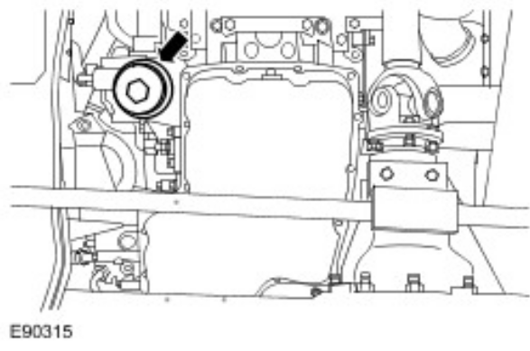
Image reference E90315
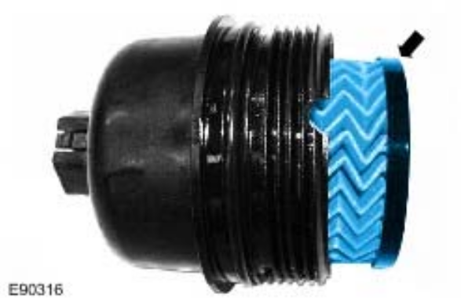
Image reference E90316
1.
WARNING: Do not work on or under a vehicle supported only by a jack. Always support the vehicle on safety stands.
Raise and support the vehicle. Lifting
2. Loosen the oil filter cover 3 turns and allow the engine oil to drain.
3. NOTE: Position cloth to collect fluid spillage.
Remove the oil filter cover and oil filter element.
4. Remove and discard the oil filter element.
5. Drain the engine oil.
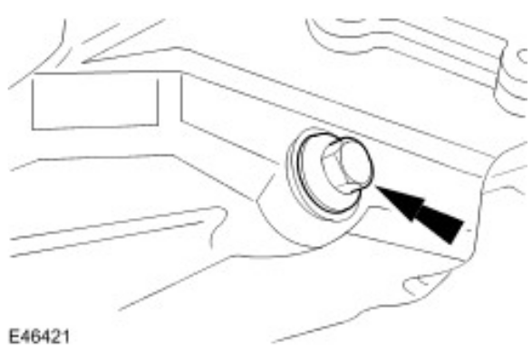
Image reference E46421
6. Install a new drain plug.
7. Install a new oil filter cover O-ring seal.
8. Install a new oil filter element to the oil filter cover.
9. Install the oil filter cover and oil filter element.
10. Fill the engine with the recommended oil to the correct level.
11. Connect the battery ground cable. Battery Connect
12. Check and top-up the engine oil.
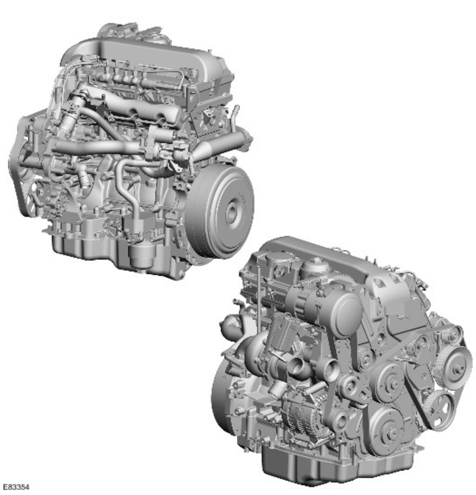
Image reference E83354
The 2.4 liter diesel engine is a 4 cylinder unit, direct injection, with 4 valves per cylinder, operated by 2 overhead camshafts.
The engine emissions comply with European Commission Directive (ECD) 4 legislative requirements and employs a catalytic converter, electronic engine management control, positive crankcase ventilation and Exhaust Gas Re-circulation (EGR) to limit the emission of pollutants.
The unit is water cooled and turbocharged. The fuel injection system features common rail technology.
The cylinder block is manufactured in Compacted Graphite Iron (CGI) and is coupled with a separate aluminum ladder frame to provide a lightweight, compact and very stiff bottom end of the engine.
The cylinder head is cast aluminum with a moulded plastic camshaft cover.
The single-piece oil sump is formed from pressed steel. The exhaust manifold is cast iron and includes a connection for the turbocharger.
A moulded plastic acoustic cover is fitted over the upper engine to reduce engine-generated noise.
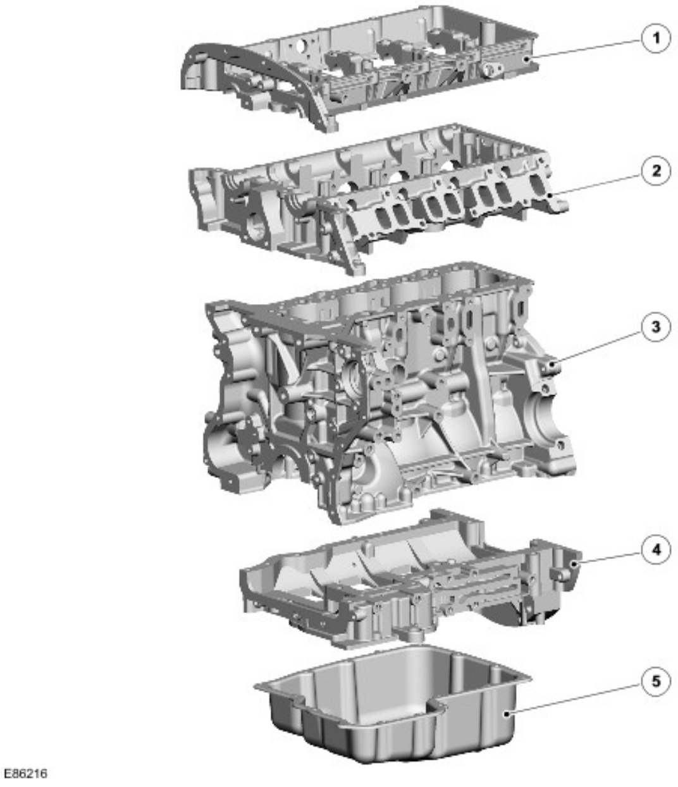
Image reference E86216
| Item | Part Number | Description |
|---|---|---|
| 1 | Camshaft carrier | |
| 2 | Cylinder head | |
| 3 | Cylinder block | |
| 4 | Ladder frame | |
| 5 | Oil pan |
The technical features include:
| Description | Specifications |
|---|---|
| Cubic capacity | 2,402 ccm |
| Stroke | 94.6 mm |
| Bore | 89.9 mm |
| Compression ratio | 19:1 |
| Firing order | 1-3-4-2 |
| Idle speed | 900 rpm |
| Max. power output | 90 kW (122 PS) at 3,500 rpm |
| Max. torque | 360 Nm at 2,000 rpm |
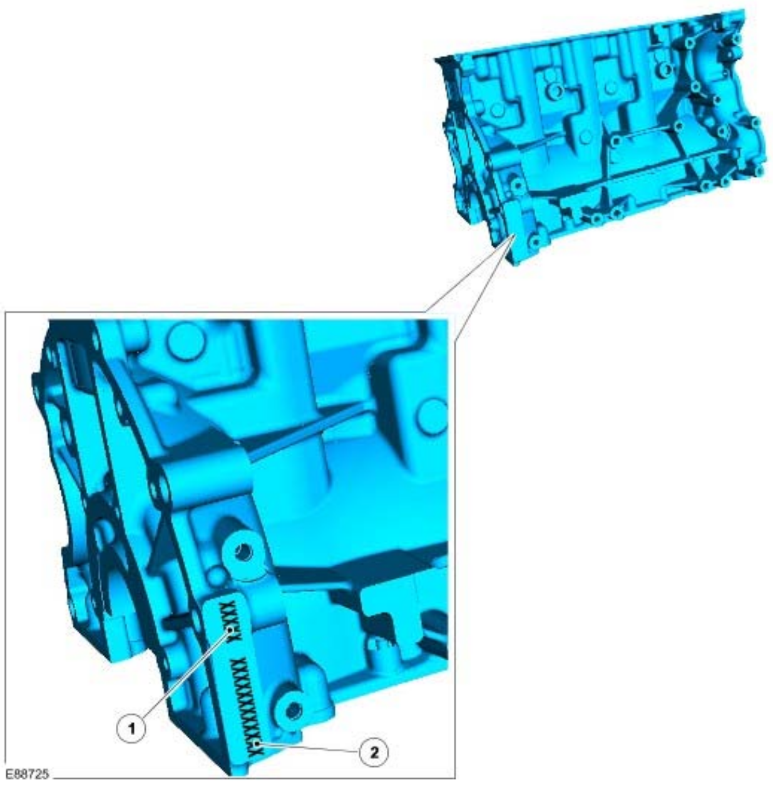
Image reference E88725
| Item | Part Number | Description |
|---|---|---|
| 1 | Engine code and serial number location | |
| 2 | Engine identification plate location |
The engine serial number (12 digits) and engine code (5 digits) are stamped on the exhaust side of the cylinder block, parallel to the transmission clutch housing.
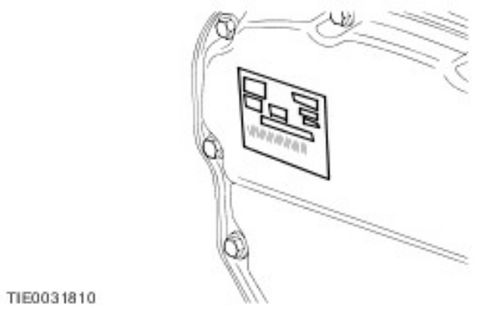
Image reference TIE0031810
The engine identification plate is located on the cover of the timing cover.
It contains the date and time of manufacture and the engine part number.
The main cylinder block components are:
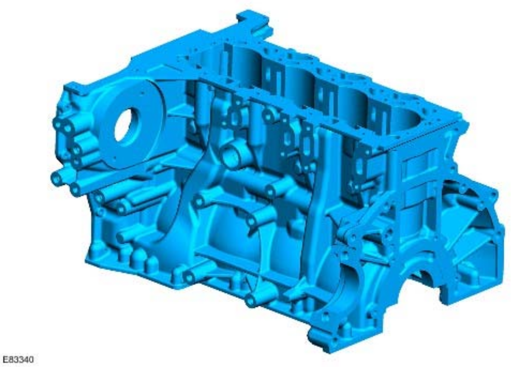
Image reference E83340
The cylinders and crankcase are contained in the cylinder block, which is of single cast CGI construction with a hollow beam structure.
With this type of construction less material is required than for a conventional cast iron block, therefore, reducing engine weight and length.
The cylinder bores are machined directly in the block.
Three different bore diameters are used in production to ensure very precise adjustment of the clearance between the pistons and cylinders.
A turbocharger oil feed filter is located at number 1 journal to prevent debris from entering the turbocharger and damaging the bearings.
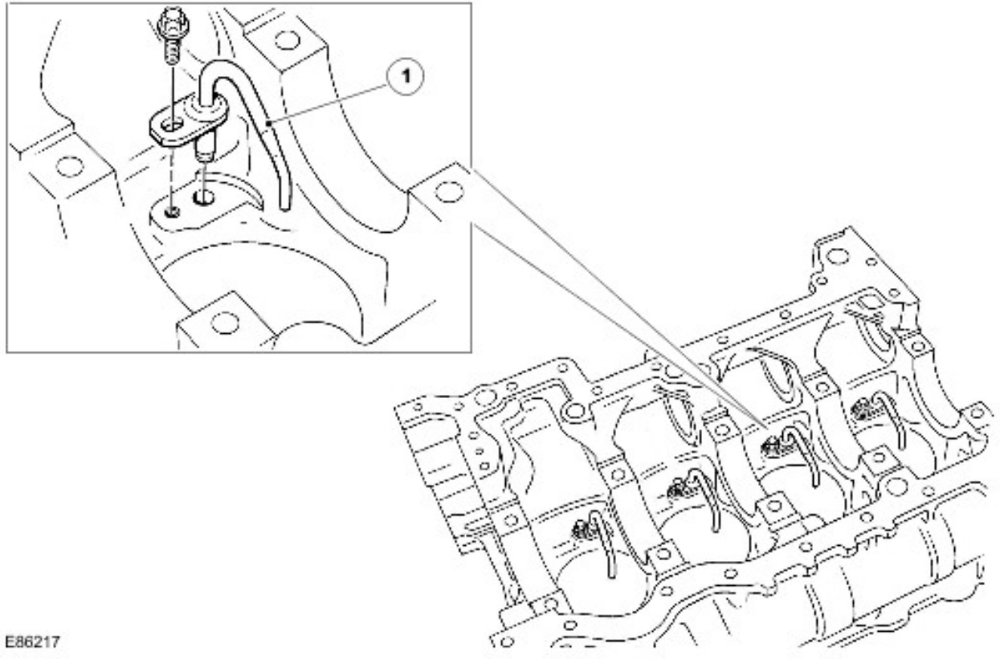
Image reference E86217
| Item | Part Number | Description |
|---|---|---|
| 1 | Piston cooling jet |
Jets located in the cylinder block provide piston and piston pin lubrication and cooling.These jets spray oil on to the inside of the piston, the oil then flows through an internal wave shaped oil cooling channel to help cool each piston crown.
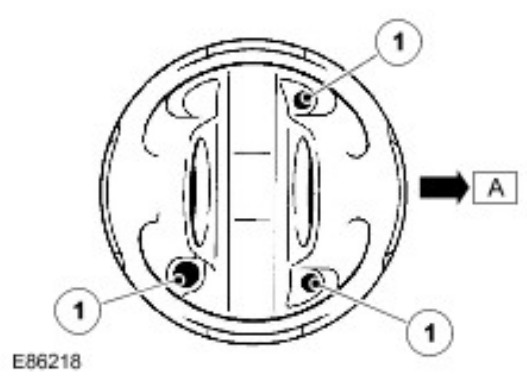
Image reference E86218
| Item | Part Number | Description |
|---|---|---|
| A | Front of the engine | |
| 1 | Oil cooling channels |
Lubrication oil is distributed through the cylinder block, via the main oil gallery and channels bored in the block, to all critical moving parts.These channels divert oil to the main and big-end bearings via holes machined into the crankshaft.
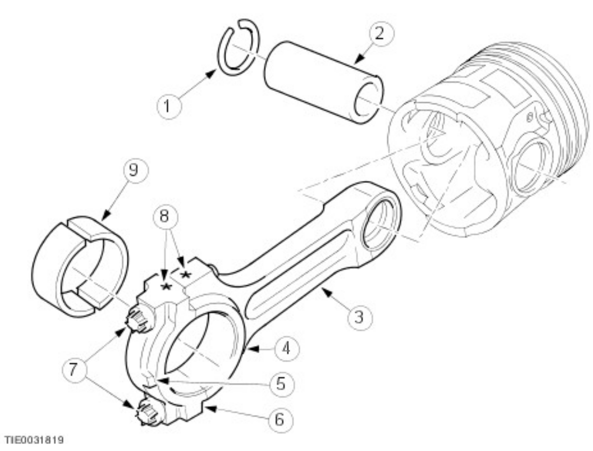
Image reference TIE0031819
| Item | Part Number | Description |
|---|---|---|
| 1 | Circlip | |
| 2 | Piston pin | |
| 3 | Connecting rod | |
| 4 | Connecting rod bearing | |
| 5 | Projection | |
| 6 | Bearing cap | |
| 7 | Retaining bolts | |
| 8 | Identification | |
| 9 | Bearing shell |
The connecting rods are manufactured from sinter-forged steel. The selective connecting rod bearings are aluminum/tin split plain bearings.The connecting rod bearing is 'sputter coated', which is a manufacturing process that layers the bearing material to produce a higher load capacity for improved durability.
The connecting rods are available in 3 different lengths. For identification, the connecting rod and bearing cap are marked with the corresponding identification code.
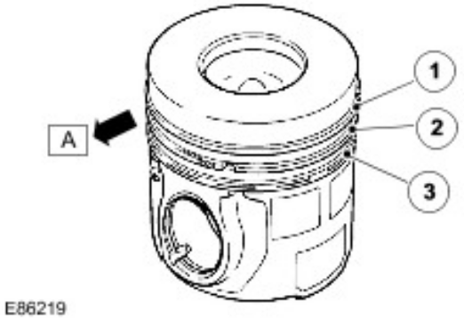
Image reference E86219
| Item | Part Number | Description |
|---|---|---|
| A | Front of the engine | |
| 1 | Upper compression ring | |
| 2 | Lower compression ring | |
| 3 | Oil control ring |
The pistons are made from aluminum alloy and are fitted with three rings. The piston crown incorporates a pronounced bowl; this forms the combustion chamber, which promotes swirl and turbulence necessary for good combustion and improved emissions. In addition, the piston also incorporates oil cooling galleries within the piston crown to enhance piston cooling (see piston cooling jets section for more information).
When installing pistons ensure the arrows on the piston crowns all point to the front of the engine.
Each piston is installed on a wrist pin located in an aluminum/tin bushing in the connecting rod.
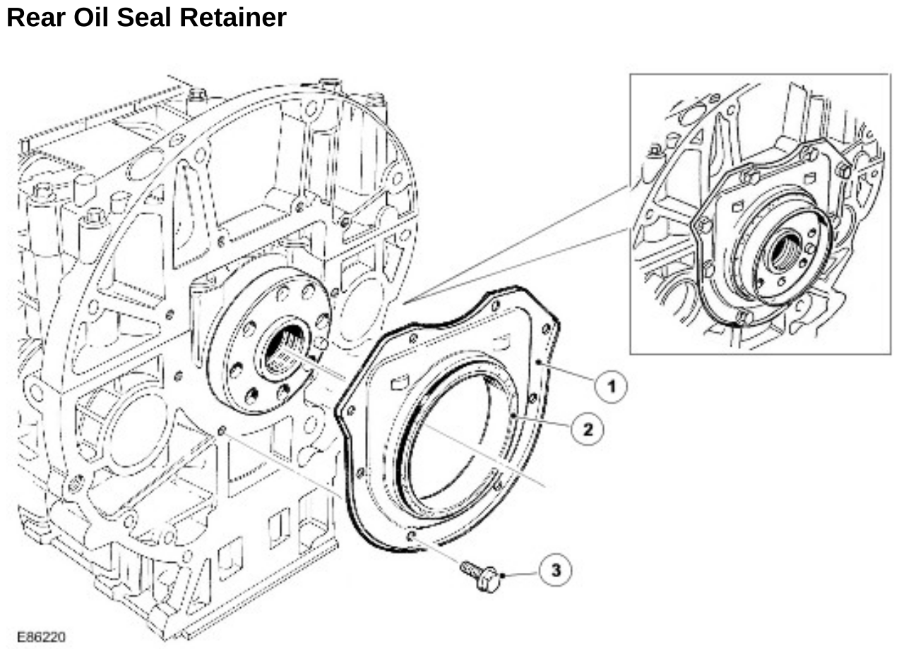
Image reference E86220
| Item | Part Number | Description |
|---|---|---|
| 1 | Rear oil seal retainer | |
| 2 | Rear oil seal | |
| 3 | Bolt (8 off) |
The crankshaft rear oil seal retainer is attached to the rear of the cylinder block by 8 bolts and is sealed with a rubber seal.
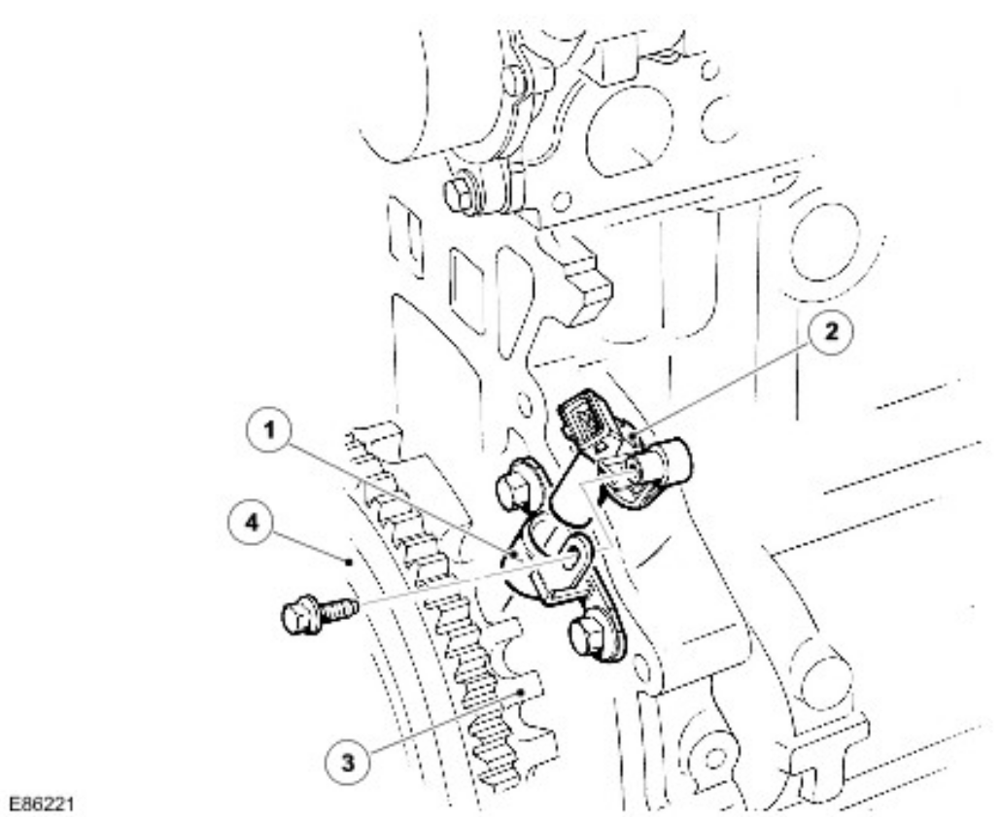
Image reference E86221
| Item | Part Number | Description |
|---|---|---|
| 1 | CKP mounting bracket | |
| 2 | CKP sensor | |
| 3 | Trigger wheel (reluctor) | |
| 4 | Flywheel |
The CKP sensor is located on the cylinder block and transmission flange.The sensor provides an input of engine crankshaft speed and position.The sensor works on the Hall effect principle and scans a trigger wheel on the back of the flywheel. If the CKP sensor bracket has been removed it is important it is aligned correctly when fitting. For additional information, refer to Electronic Engine Controls - 2.4L Duratorq-TDCi (Puma) Diesel (303-14 Electronic Engine Controls)
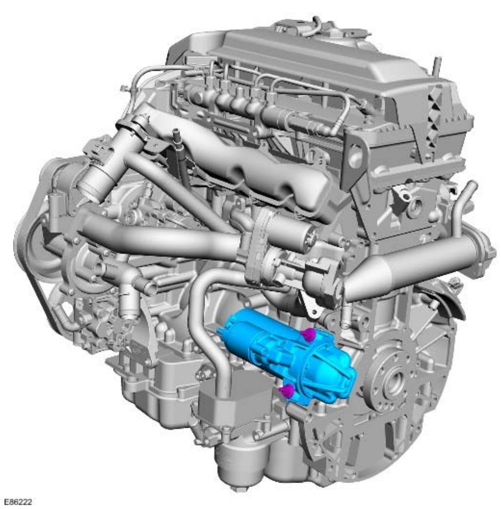
Image reference E86222
The engine starter motor is installed at the rear Left Hand (LH) side of the cylinder block, on the transmission flange. For additional information, refer to Starting System - 2.4L Duratorq-TDCi (Puma) Diesel (303-06 Starting System)
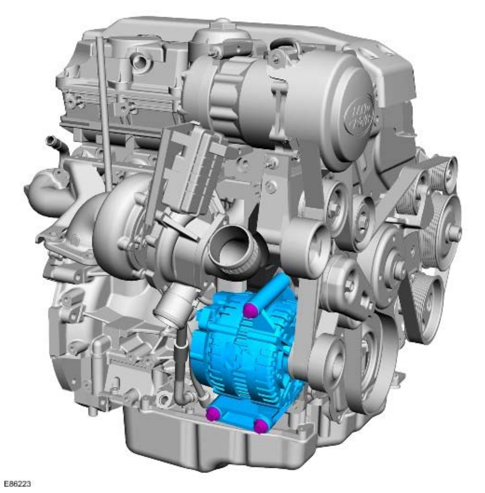
Image reference E86223
| Item | Part Number | Description |
|---|---|---|
| 1 | Generator mounting bracket | |
| 2 | Generator |
The generator is located at the front Right Hand (RH) side of the engine on a mounting bracket, which is bolted to the cylinder block. The accessory drive belt drives the generator pulley, which in turn is driven from the engine crankshaft pulley. For additional information, refer to Generator - 2.4L Duratorq-TDCi (Puma) Diesel (414-02 Generator and Regulator)
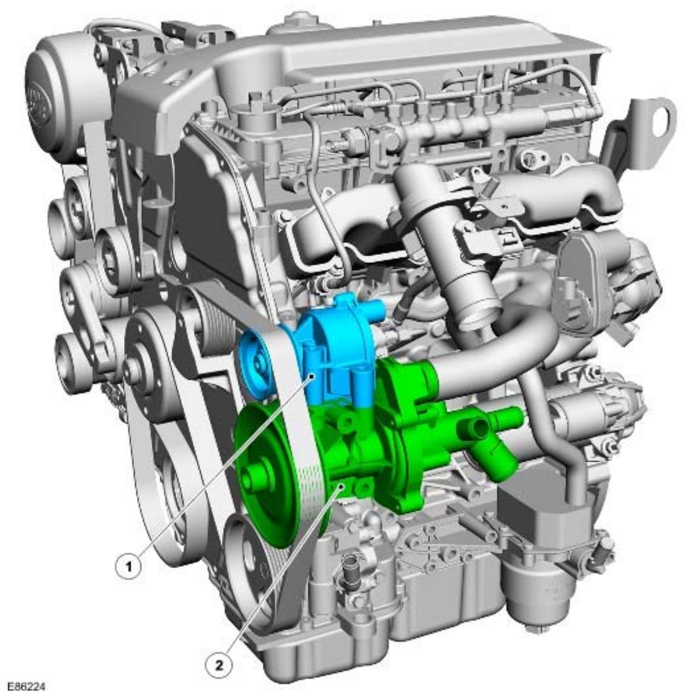
Image reference E86224
| Item | Part Number | Description |
|---|---|---|
| 1 | Vacuum pump | |
| 2 | Coolant pump |
The coolant pump is installed at the front, LH side of the cylinder block and is secured with 4 bolts.The coolant pump is driven by the accessory drive belt via the crankshaft.The engine thermostat is located in the rear of the coolant pump housing and begins to open at 88° (190°F).For additional information, refer to Engine Cooling - 2.4L Duratorq-TDCi (Puma) Diesel (303-03 Engine Cooling)
The vacuum pump is mounted on top of the cooling pump and is secured with 3 bolts. The vacuum pump is also driven by the accessory drive belt via the crankshaft.
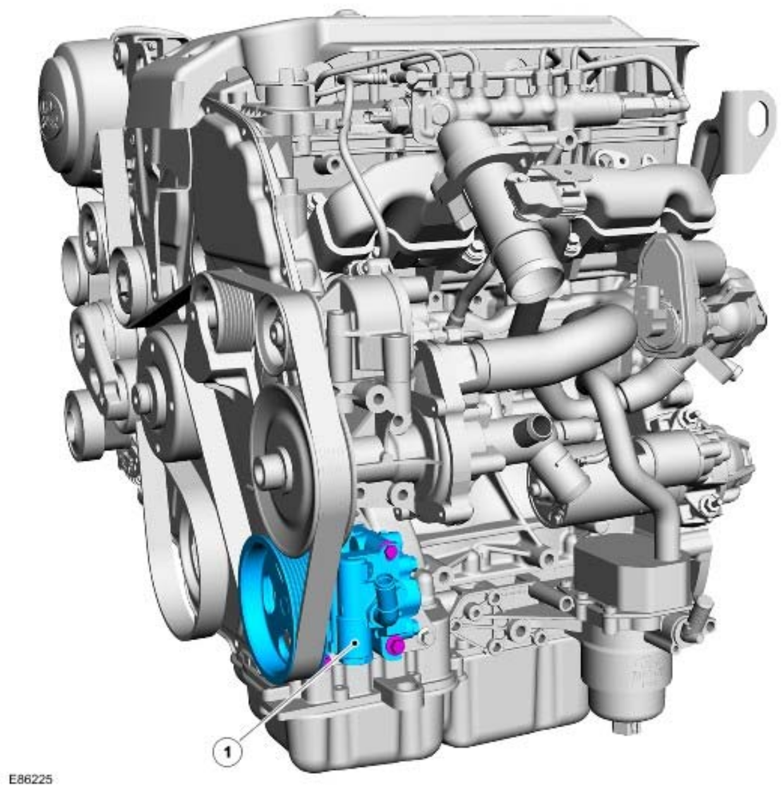
Image reference E86225
| Item | Part Number | Description |
|---|---|---|
| 1 | Power steering pump |
The power steering pump is located at the front, LH side of the cylinder block, directly below the coolant pump. The power steering pump is attached to a mounting bracket via 3 bolts and the mounting bracket locates on the cylinder block and ladder frame via 4 bolts. For additional information, refer to Power Steering (211-02 Power Steering)
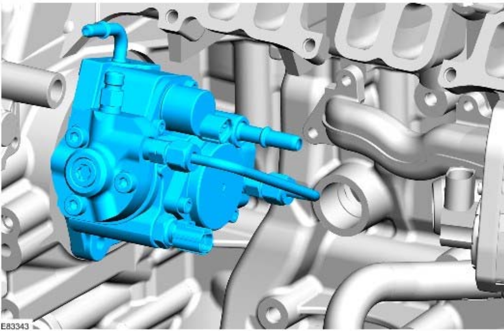
Image reference E83343
The high-pressure fuel pump is located under the intake manifold, behind the coolant and vacuum pump assembly. The fuel pump is driven by the timing chain at the front of the engine and includes a transfer pump and a high pressure pump which are serviced as one unit.
The pump provides the interface between the low and high-pressure systems. Its function is to always provide sufficient compressed fuel under all operating conditions and for the entire service life of the vehicle.
The transfer pump draws the fuel from the fuel tank, through the fuel filter, and then pumps the fuel to the high-pressure pump. The transfer pump maintains a constant fuel pressure through a regulating valve within the fuel pump; this is known as transfer pressure.
The high-pressure pump receives fuel at transfer pressure from the transfer pump and increases the fuel pressure. The high pressure fuel is then transferred from the high-pressure pump to the common rail. For additional information, refer to Fuel Charging and Controls - 2.4L Duratorq-TDCi (Puma) Diesel (303-04A Fuel Charging and Controls)
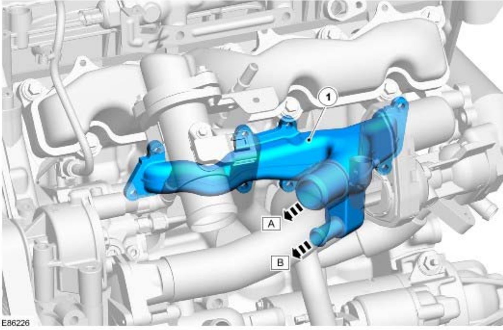
Image reference E86226
| Item | Part Number | Description |
|---|---|---|
| A | Coolant pump connection | |
| B | Engine oil cooler connection | |
| 1 | Coolant distribution manifold |
The coolant distribution manifold is located on the LH of the cylinder block, just below the intake manifold. The manifold receives coolant from the coolant pump and distributes it to the cylinder block and the engine oil cooler.
The main crankshaft and sump components are:
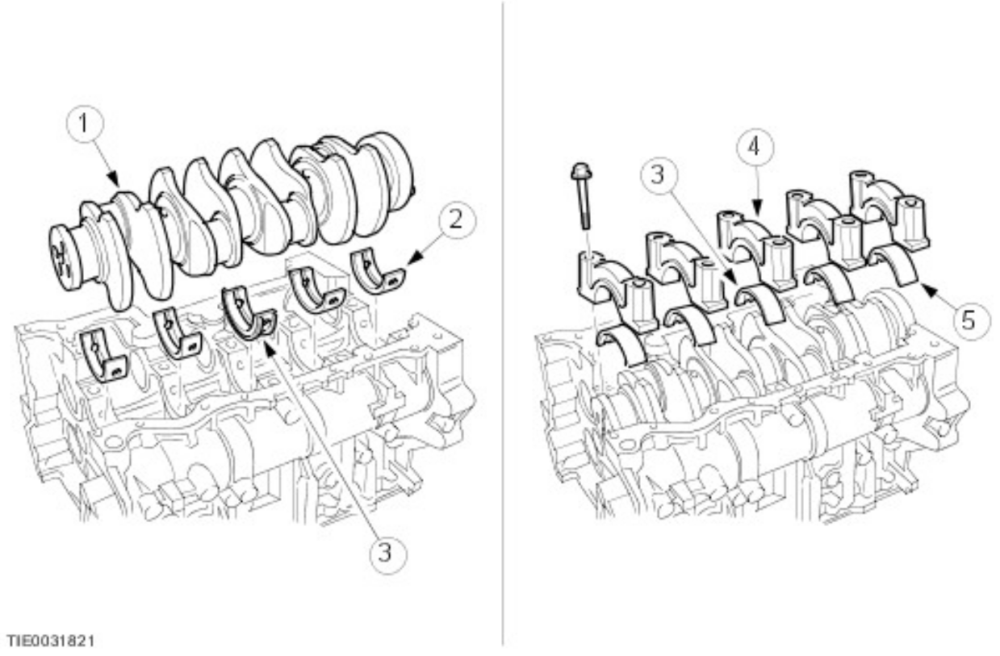
Image reference TIE0031821
| Item | Part Number | Description |
|---|---|---|
| 1 | Crankshaft | |
| 2 | Upper main bearing shell | |
| 3 | Upper main bearing shell (No.3 is a thrust bearing) | |
| 4 | Bearing cap | |
| 5 | Lower main bearing shell |
The crankshaft is forged steel and fillet rolled with induction hardened journals, which run in 5 bearings with clamped 2 layer bearing shells.
The crankshaft drive pulley is not keyed onto the crankshaft; it is secured to the crankshaft by a single bolt.
The main bearing caps are double and cross-bolted, this adds to the strength and rigidity of the engine block.
The main bearings are aluminum/tin split plain selective bearings. An oil groove in the top half of each bearing transfers oil into the crankshaft for lubrication of the connecting rod bearings. The upper and lower shells of bearing number 3 contain integral thrust washers, which limits the end float of the crankshaft.
The arrow on the bearing caps must point towards the front of the engine and are identified as follows:
| Bearing cap | Identification |
|---|---|
| 1 | F (front) |
| 2 | 2 |
| 3 | 3 |
| 4 | 4 |
| 5 | R (rear) |
The crankshaft front and rear oil seals are a press fit in the oil seal retainers.
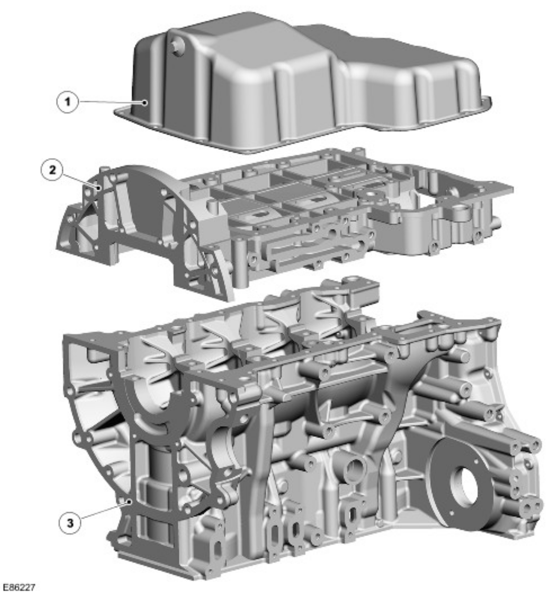
Image reference E86227
| Item | Part Number | Description |
|---|---|---|
| 1 | Oil pan | |
| 2 | Ladder frame | |
| 3 | Cylinder block |
The aluminum alloy ladder frame is fitted to the lower cylinder block to stiffen the base structure of the engine thus helping to reduce Noise, Vibration and Harshness (NVH). The frame is made of high-pressure die cast aluminum and also incorporates an oil baffle plate to reduce oil foaming and splash.
The ladder frame and the cylinder block side clearance must be aligned using a special tool. The rear clearance must be aligned using a suitable straight edge (for more information refer to the workshop repair manual).
The ladder frame is secured to the cylinder block with 22 retaining bolts. The pressed steel oil pan is bolted to the ladder frame with 16 bolts.
The engine oil drain plug is located at the rear face of the oil pan and the oil level/temperature sensor is located at the RH side of the ladder frame, behind the turbocharger oil drain tube. The engine oil pump is bolted to the underside of the ladder frame at the front LH side and is driven by a sprocket on the crankshaft via a dedicated chain (for more information refer to the lubrication section).
A reusable gasket seals the joint between the oil pan and the ladder frame; a bead of sealant seals the joint between the sump and the ladder frame.
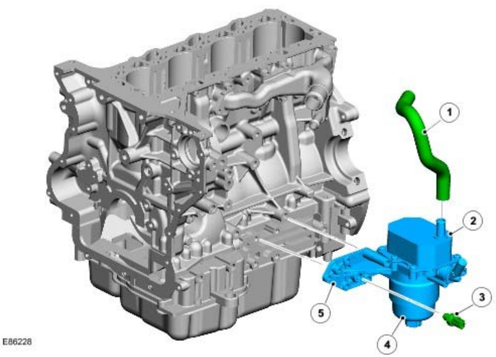
Image reference E86228
| Item | Part Number | Description |
|---|---|---|
| 1 | Hose - coolant distribution manifold to oil cooler | |
| 2 | Oil cooler | |
| 3 | Oil pressure switch | |
| 4 | Oil filter | |
| 5 | Mounting plate |
The oil filter and engine oil cooler assembly is mounted to the LH side of the ladder frame with 6 bolts. The oil pressure switch locates through the oil filter and engine oil cooler assembly mounting plate and into the ladder frame (for more information refer to the lubrication section).
The main camshaft drive components are:
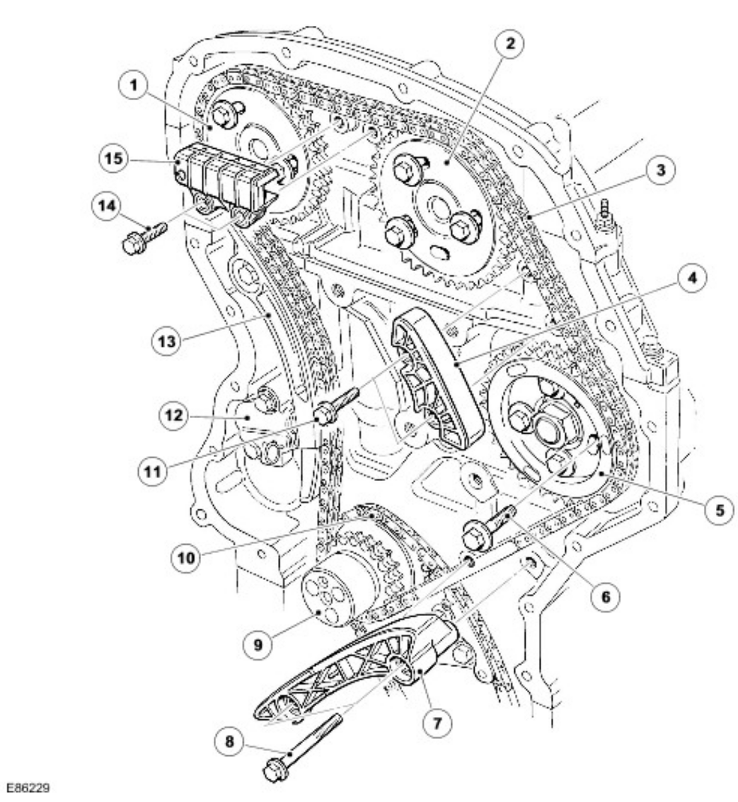
Image reference E86229
| Item | Part Number | Description |
|---|---|---|
| 1 | Exhaust camshaft sprocket | |
| 2 | Inlet camshaft sprocket | |
| 3 | Primary drive chain | |
| 4 | Primary drive chain guide | |
| 5 | High-pressure fuel injection pump sprocket | |
| 6 | Bolt (4 off) | |
| 7 | Primary drive chain guide | |
| 8 | Bolt (2 off) | |
| 9 | Crankshaft sprocket | |
| 10 | Secondary drive chain | |
| 11 | Bolt (2 off) | |
| 12 | Automatic tensioner | |
| 13 | Primary drive chain tensioner arm | |
| 14 | Bolt (4 off) | |
| 15 | Primary drive chain guide |
A multiple link primary drive chain transmits the drive from the sprocket on the crankshaft to the exhaust camshaft, the inlet camshaft and the high-pressure fuel pump. The secondary drive chain transmits drive from the sprocket on the crankshaft to the oil pump located on the underside of the ladder frame.
One bolt locates the drive sprocket on the crankshaft and 3 bolts are used to mount the crankshaft's torsional vibration damper to the crankshaft via holes in the drive sprocket. The inlet and exhaust camshaft sprockets are aligned on their respective camshafts using a spigot tool and a timing peg. Once they are in their correct position, 3 bolts are used to secure each camshaft sprocket to their camshaft.
Each chain has a hydraulic tensioner operated by engine oil. The primary chain is lubricated via an oil squirt tube located centrally at the front of the engine block. Oil from the ladder frame and oil pan assembly splash lubricates the secondary chain. The primary chain tensioner acts on a pivoting flexible tensioner blade. The secondary chain tensioner acts directly on the chain. Guide rails are installed on the drive side of the primary chains.

Image reference E86230
| Item | Part Number | Description |
|---|---|---|
| 1 | Bolt (20 off) | |
| 2 | Front cover | |
| 3 | Locating pins | |
| 4 | Guide pin | |
| 5 | Nut (2 off) | |
| 6 | Alignment tool | |
| 7 | Water outlet | |
| 8 | Bolt (2 off) | |
| 9 | Nut | |
| 10 | Stud |
The pressed steel front cover is bolted to the front of the cylinder block, the cylinder head and the ladder frame with 20 bolts and sealed with a bead of Room Temperature Vulcanizing (RTV) silicon sealant.
When installing the front cover, a special locating tool is required, which fits in the crankshaft sprocket aperture, to aid
the alignment of the front cover.
The main cylinder head components are:
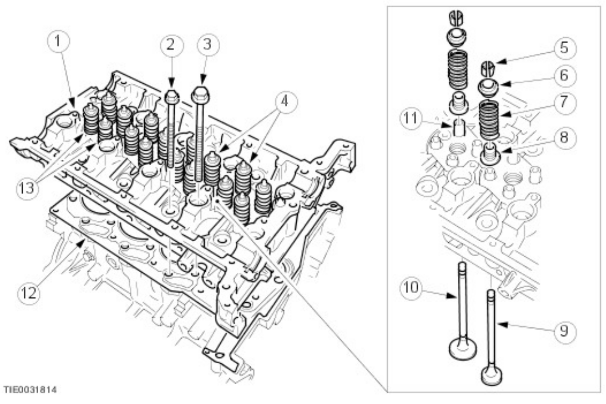
Image reference TIE0031814
| Item | Part Number | Description |
|---|---|---|
| 1 | Cylinder head | |
| 2 | Outer cylinder head bolt (8 off) | |
| 3 | Inner cylinder head bolt (10 off) | |
| 4 | Intake valves (16 off) | |
| 5 | Valve collets (32 off) | |
| 6 | Spring retainer (16 off) | |
| 7 | Valve spring (16 off) | |
| 8 | Valve stem oil seal (16 off) | |
| 9 | Exhaust valve (8 off) | |
| 10 | Intake valve (8 off) | |
| 11 | Valve guide (16 off) | |
| 12 | Cylinder head gasket | |
| 13 | Valve assembly |
The cylinder head is made of gravity die cast aluminum. Four valves per cylinder provides improved cylinder charging, a compact combustion chamber, and vertical fuel injectors guarantee optimum distribution of the fuel in the combustion chamber.
Eighteen deep-seated bolts help reduce distortion and secure the cylinder head to the cylinder block. The 8 cylinder head outer bolts are shorter than the inner bolts and are located beneath the camshafts, 4 under the inlet camshaft and 4 under the exhaust camshaft. Two hollow dowels align each cylinder head with the cylinder block.
The cylinder head has four ports machined at each cylinder location, 2 exhaust ports and 2 inlet ports. One of the inlet ports is helical and functions as a swirl port, the other is arranged laterally as a tangential port and functions as a charge port.
NOTE:The cylinder head cannot be reworked.
All valves are supported in sintered metal seats and guide inserts. Collets, valve collars and spring seats locate single valve springs on both intake and exhaust valves. Valve stem seals are integrated into the spring seats.
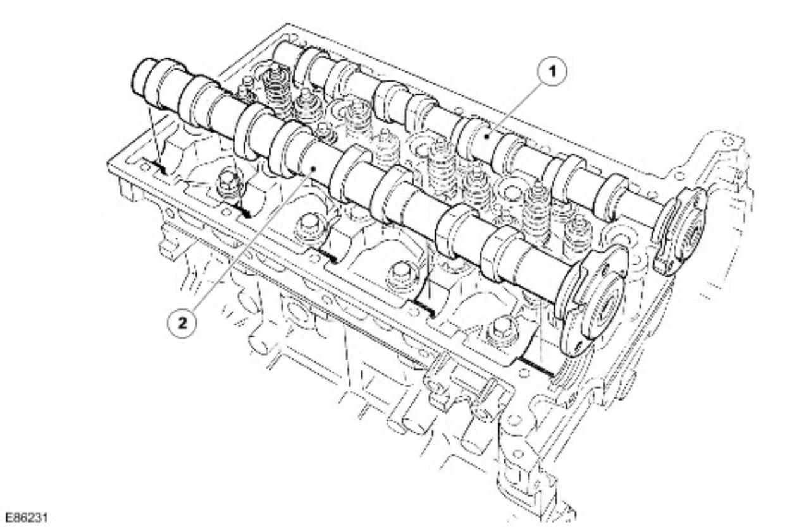
Image reference E86231
| Item | Part Number | Description |
|---|---|---|
| 1 | Inlet camshaft | |
| 2 | Exhaust camshaft |
The camshafts are of a hollow steel tube construction, with pressed on sintered lobes and have a machined face at the front to accept the camshaft gear sprocket. The camshafts are retained in the cylinder head by the camshaft carrier. The reluctor, machined towards the rear of the inlet camshaft, enables the Camshaft Position (CMP) sensor to provide a signal, which enables the ECM to determine the position of the camshaft relative to the crankshaft. For additional information, refer to Electronic Engine Controls - 2.4L Duratorq-TDCi (Puma) Diesel (303-14 Electronic Engine Controls)
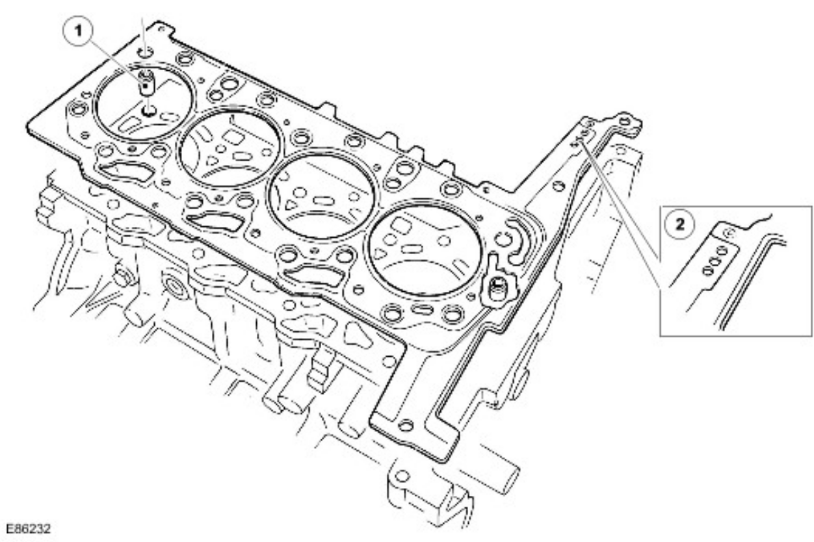
Image reference E86232
| Item | Part Number | Description |
|---|---|---|
| 1 | Locating bush (2 off) | |
| 2 | Identification holes |
The cylinder head gasket is a 4-layer, laminated steel type and is available in 3 different thicknesses. The choice of gasket thickness is dependent on the maximum piston protrusion. Gasket thickness is identified by holes in the front end of the gasket.
Two locating bushes are fitted in the cylinder block to centre the cylinder head gasket.
NOTE:If a cylinder head gasket is being changed only use a new gasket with the same identification markings. If new pistons or connecting rods are fitted, measure the maximum piston protrusion height and select the appropriate gasket.
Damage to the gasket or mating faces of the cylinder head and engine block will lead to leaks and therefore must be avoided. Before fitting a new gasket it is important to make sure there is no dirt between the layers of the gasket.
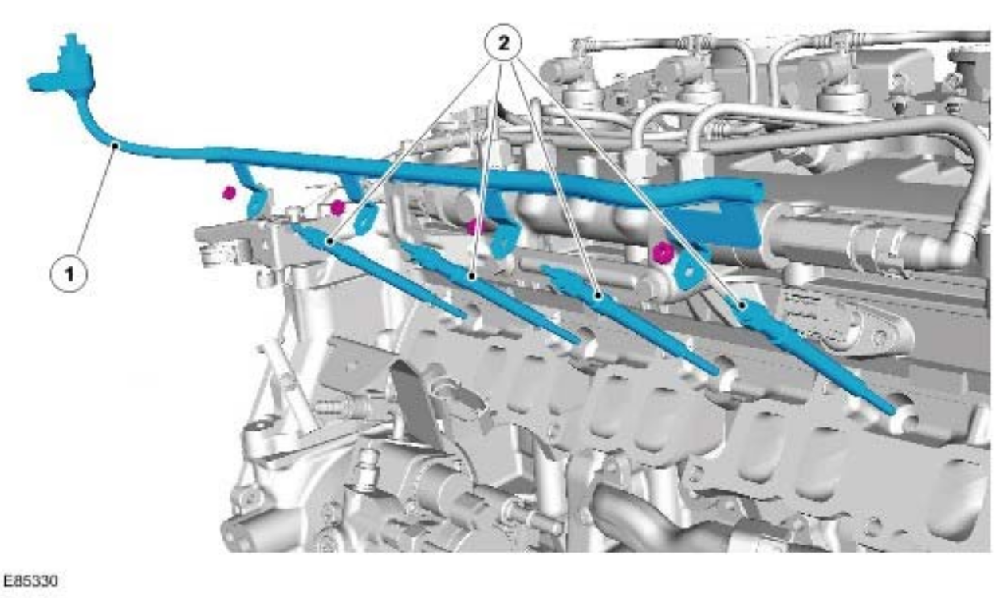
Image reference E85330
| Item | Part Number | Description |
|---|---|---|
| 1 | Power supply wire | |
| 2 | Glow plugs (4 off) |
The glow plugs are arranged centrally on the inlet side of the cylinder head, between the two inlet ports of each cylinder. For additional information, refer to Glow Plug System - 2.4L Duratorq-TDCi (Puma) Diesel (303-07 Glow Plug System)
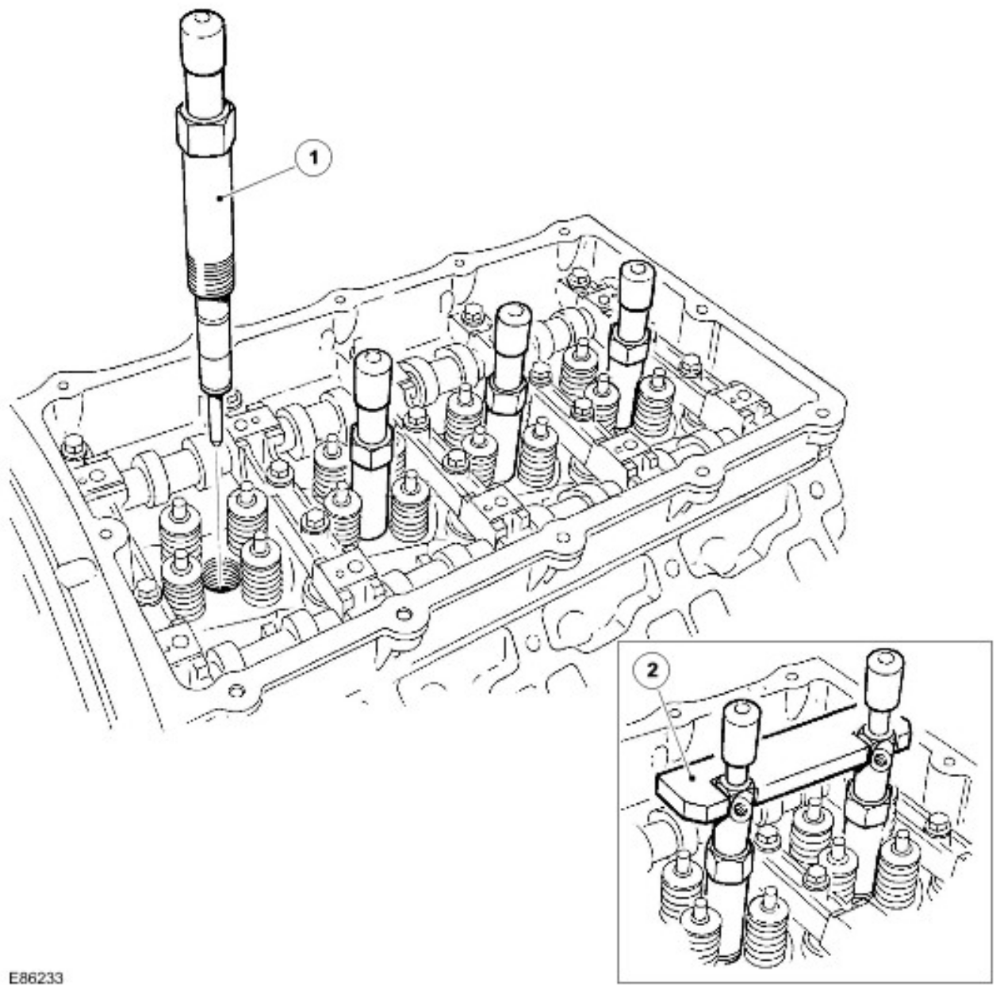
Image reference E86233
| Item | Part Number | Description |
|---|---|---|
| 1 | Injector | |
| 2 | Injector alignment tool |
The 4 electronic fuel injectors are centrally mounted; 1 above each cylinder and are fixed to the cylinder head by means of an injector nut.
The fuel injectors inject the quantity of fuel required for all the engine operating conditions into the combustion chambers. In order to achieve the optimal injection timing and precise injected fuel quantity, special fuel injectors with a hydraulic servo system and electrical actuator unit (solenoid valve) are used.
The injectors are actuated directly by the Engine Control Module (ECM). For additional information, refer to Fuel Charging and Controls - 2.4L Duratorq-TDCi (Puma) Diesel (303-04A Fuel Charging and Controls) For additional information, refer to Electronic Engine Controls - 2.4L Duratorq-TDCi (Puma) Diesel (303-14 Electronic Engine Controls)
The CHT sensor is located at the centre rear of the cylinder head (transmission end). The sensor measures the temperature of the cylinder head and not the temperature of the coolant.
The CHT sensor affects the following functions:
For additional information, refer to Electronic Engine Controls - 2.4L Duratorq-TDCi (Puma) Diesel (303-14 Electronic Engine Controls)
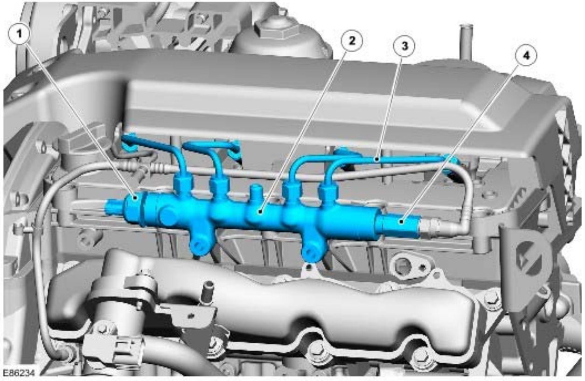
Image reference E86234
| Item | Part Number | Description |
|---|---|---|
| 1 | Fuel pressure sensor | |
| 2 | High-pressure fuel rail | |
| 3 | High-pressure fuel pipes (fuel rail to injectors) | |
| 4 | Pressure limiting valve |
The fuel rail, also known as the common rail, is manufactured from forged steel. It stores the fuel at high-pressure and prevents pressure fluctuations in the high-pressure system.
The fuel supplied by the high-pressure fuel pump passes through a high-pressure fuel line to the fuel rail. The fuel is then sent to the individual fuel injectors via the 4 injector tubes, which are all the same length.
The pressure limiting valve opens at a fuel pressure of approximately 2000 bar. It serves as a safety device in the event of a malfunction within the high-pressure system, thus preventing damage due to excessive pressure.
NOTE:The pressure limiting valve is a non-serviceable valve. It must be replaced if triggered, as the valve can no longer be guaranteed leak-free.
Triggering of the pressure limiting valve is detected by the ECM, whereupon a corresponding Diagnostic Trouble Code (DTC) is set and the Malfunction Indicator Lamp (MIL) is actuated. For additional information, refer to Fuel Charging and Controls - 2.4L Duratorq-TDCi (Puma) Diesel (303-04A Fuel Charging and Controls) For additional information, refer to Electronic Engine Controls - 2.4L Duratorq-TDCi (Puma) Diesel (303-14 Electronic Engine Controls)
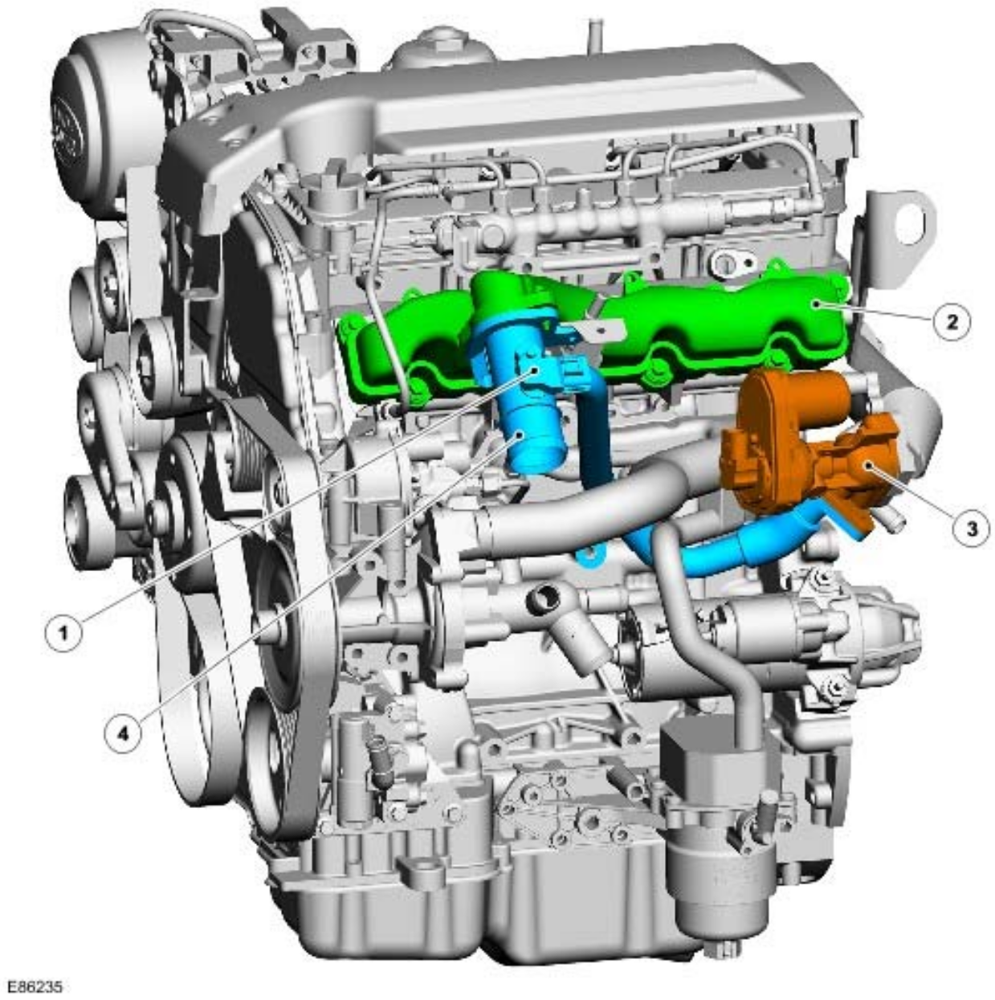
Image reference E86235
| Item | Part Number | Description |
|---|---|---|
| 1 | Mass Air Flow/Intake Air Temperature (MAF/IAT) sensor | |
| 2 | Inlet manifold | |
| 3 | EGR valve | |
| 4 | EGR outlet assembly |
The plastic inlet manifold is mounted on the LH side of the cylinder head and includes a connection for the EGR outlet pipe. The EGR outlet pipe also houses the MAF/IAT sensor, which is used by the ECM to calculate the amount of air entering the engine. For additional information, refer to Electronic Engine Controls - 2.4L Duratorq-TDCi (Puma) Diesel (303-14 Electronic Engine Controls)
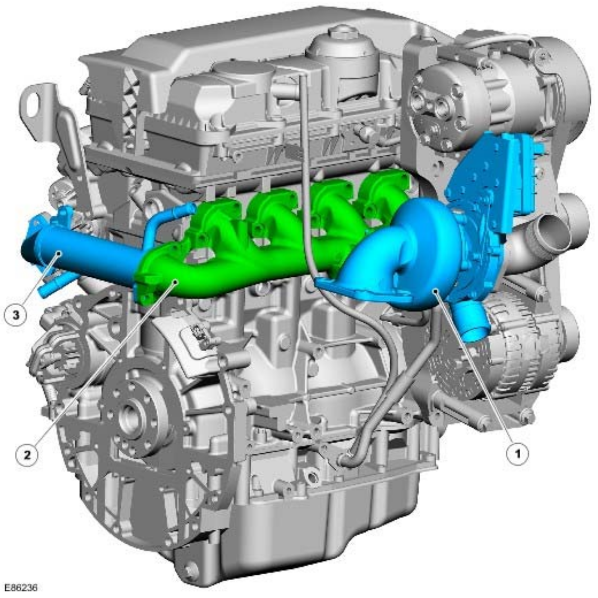
Image reference E86236
| Item | Part Number | Description |
|---|---|---|
| 1 | Turbocharger assembly | |
| 2 | Exhaust manifold | |
| 3 | EGR cooler |
The cast iron exhaust manifold is secured to the cylinder head using 8 studs with nuts. Two metal gaskets seal the manifold to the cylinder head.
A flanged connection towards the front of the manifold provides for the attachment of the turbocharger. he turbocharger is attached to the flange with 3 bolts and sealed with a metal gasket.
A second flange, located on the rear of the manifold provides the connection point for the EGR cooler. The cooler flange is secured to the manifold with 2 bolts. There is no gasket between the EGR cooler and the exhaust manifold.
The EGR system directs exhaust gases into the inlet manifold to be used in the combustion process. The principal effect of this is to reduce combustion temperatures, which in turn reduces Nitrous Oxide (NOx) emissions. For additional information, refer to Engine Emission Control - 2.4L Duratorq-TDCi (Puma) Diesel (303-08 Engine Emission Control)
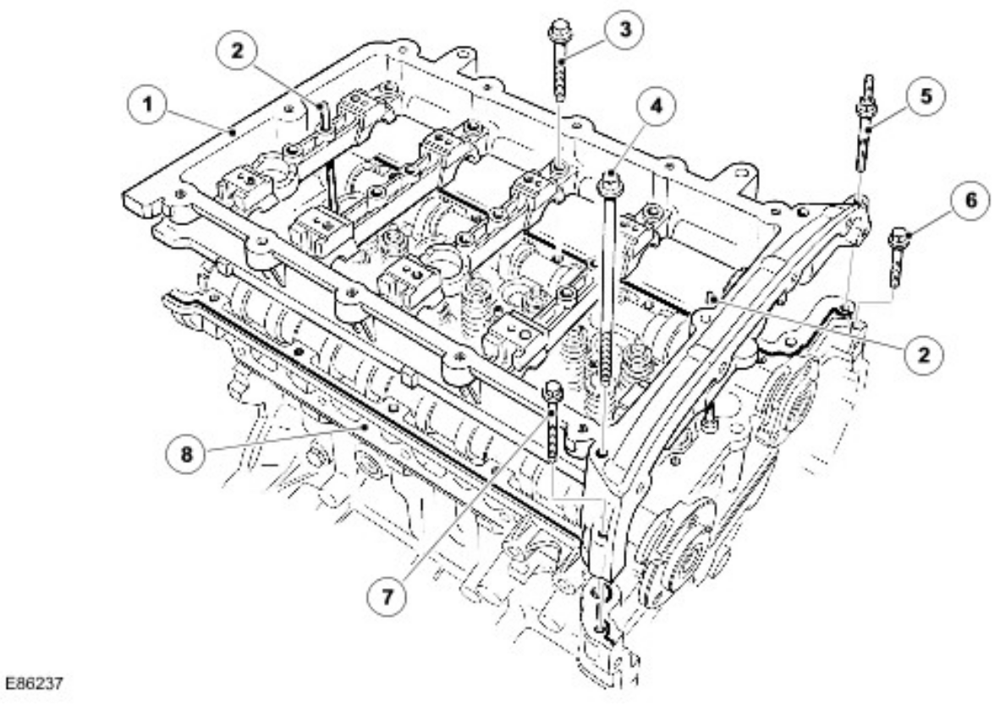
Image reference E86237
| Item | Part Number | Description |
|---|---|---|
| 1 | Camshaft carrier | |
| 2 | Alignment pin | |
| 3 | Bolt (20 off) | |
| 4 | Bolt (2 off) | |
| 5 | Stud | |
| 6 | Bolt | |
| 7 | Bolt | |
| 8 | Cylinder head |
The aluminum camshaft carrier is located on top of the cylinder head and is retained by 24 bolts and a stud. Two alignment pins are used to accurately locate the carrier to the cylinder head.
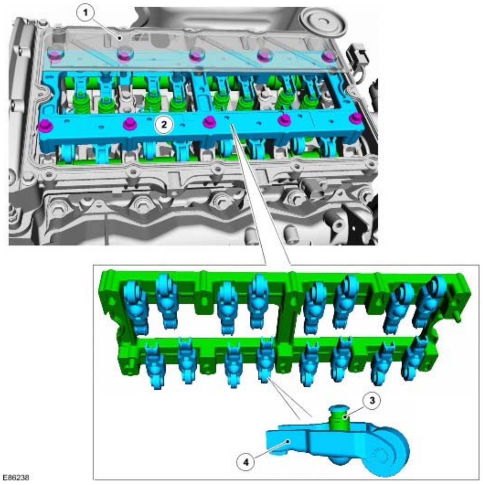
Image reference E86238
| Item | Part Number | Description |
|---|---|---|
| 1 | Oil baffle plate | |
| 2 | Aluminum support | |
| 3 | Hydraulic lash adjuster (16 off) | |
| 4 | Rocker arms (16 off) |
The valves are operated through roller-type rocker arms and hydraulic lash adjusters, actuated by the camshaft lobes. The hydraulic lash adjusters are integrated in the rocker arms and the whole assembly is contained within the camshaft carrier. When the camshaft lobe presses down on the top of a finger rocker, roller mechanism, the respective valve is forced down, opening the effected inlet or exhaust port. The use of this type of actuation method helps reduce friction in the valve timing mechanism.
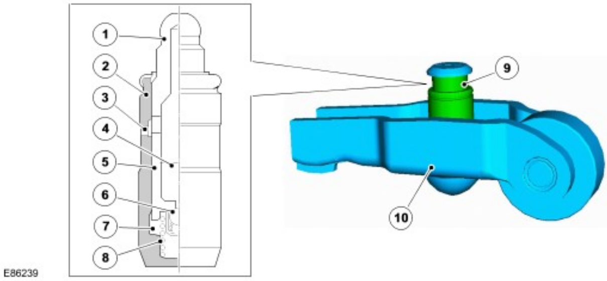
Image reference E86239
| Item | Part Number | Description |
|---|---|---|
| 1 | Plunger cap | |
| 2 | Hydraulic lash adjuster body | |
| 3 | Oil hole | |
| 4 | Reservoir chamber | |
| 5 | Plunger | |
| 6 | Check ball | |
| 7 | High-pressure chamber | |
| 8 | Plunger spring | |
| 9 | Hydraulic lash adjuster | |
| 10 | Rocker arms |
The body of the hydraulic lash adjuster contains a plunger and 2 chambers for oil feed and pressurised oil. The pressurised oil is supplied to the adjusters via the main oil galleries in the cylinder head and through a hole in the side of the adjuster body. The oil passes into a feed chamber in the adjuster and then through to a separate pressure chamber via a 1-way ball valve.
Oil flow from the pressure chamber is determined by the amount of clearance between the adjuster outer body and the centre plunger. Oil escapes up the side of the plunger every time the adjuster is operated, the downward pressure on the plunger forcing a corresponding amount of oil in the adjuster body to be displaced. When the downward pressure from the camshaft and finger rocker is removed (i.e. after the trailing flank of the camshaft lobe has passed), oil pressure forces the adjuster's plunger up again. This pressure is not sufficient to effect the valve operation, but eliminates the clearance between the finger rocker and top of the valve stem.
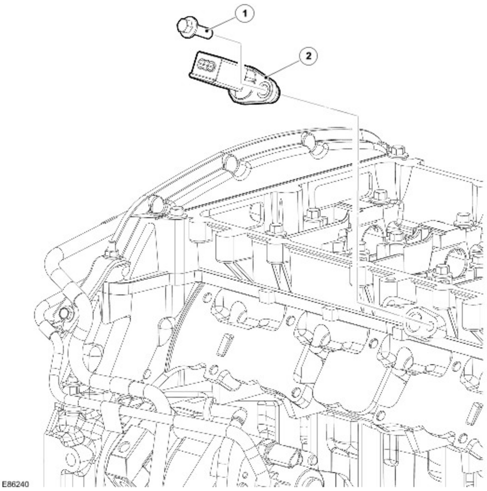
Image reference E86240
| Item | Part Number | Description |
|---|---|---|
| 1 | Bolt | |
| 2 | CMP sensor |
The CMP sensor is located on the LH side of the cylinder head towards the rear. The sensor tip protrudes through the cylinder head to pick up on the reluctor on the inlet camshaft. The sensor is a Hall effect type sensor.
The ECM uses the CMP sensor signal to determine the engine position. Once this has been established, the ECM can then operate the correct injector to inject fuel into the cylinder when the piston is at injection Top Dead Centre (TDC).
The CMP sensor is used by the ECM at engine start-up to synchronize the ECM with the CKP sensor signal. The ECM does this by using the CMP sensor signal to identify number 1 cylinder to ensure the correct injector timing. Once the ECM has established the injector timing, the CMP sensor signal is no longer used. For additional information, refer to Electronic Engine Controls - 2.4L Duratorq-TDCi (Puma) Diesel (303-14 Electronic Engine Controls)
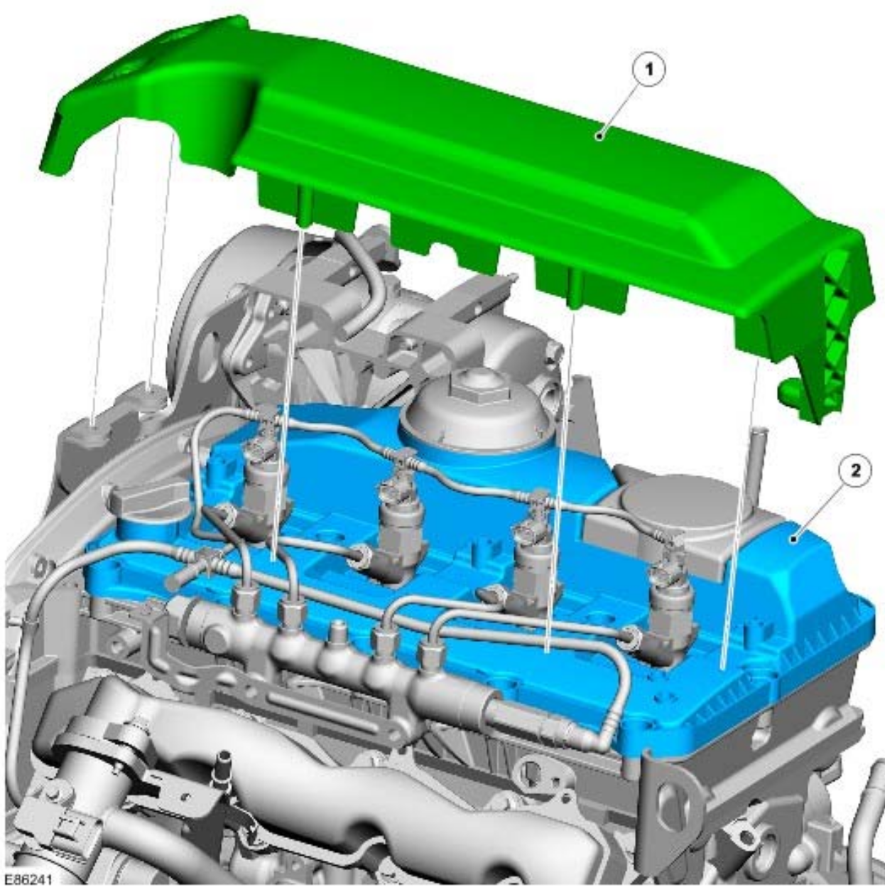
Image reference E86241
| Item | Part Number | Description |
|---|---|---|
| 1 | Engine cover | |
| 2 | Camshaft cover |
The main lubrication system components are:
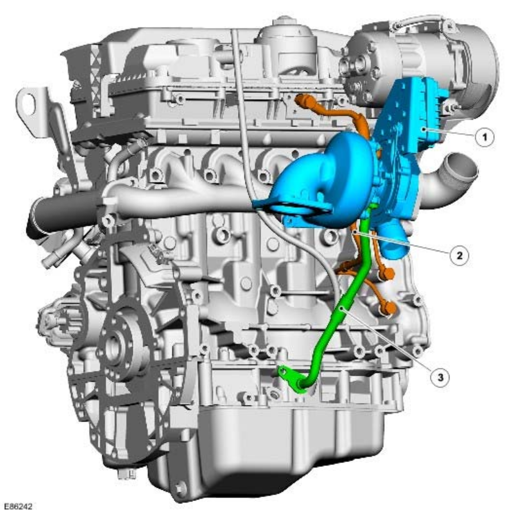
Image reference E86242
| Item | Part Number | Description |
|---|---|---|
| 1 | Turbocharger assembly | |
| 2 | Turbocharger oil feed pipe | |
| 3 | Turbocharger oil return pipe |
A tapping at the front RH side of the cylinder block, behind the generator mounting bracket, connects a pipe to the turbocharger by means of a banjo connection. Oil is supplied, under pressure via this tapping, from the oil pump to provide lubrication for the turbocharger bearings.
A port is included at the LH side of the ladder frame, below the turbocharger, to connect the turbocharger oil return pipe to the sump.
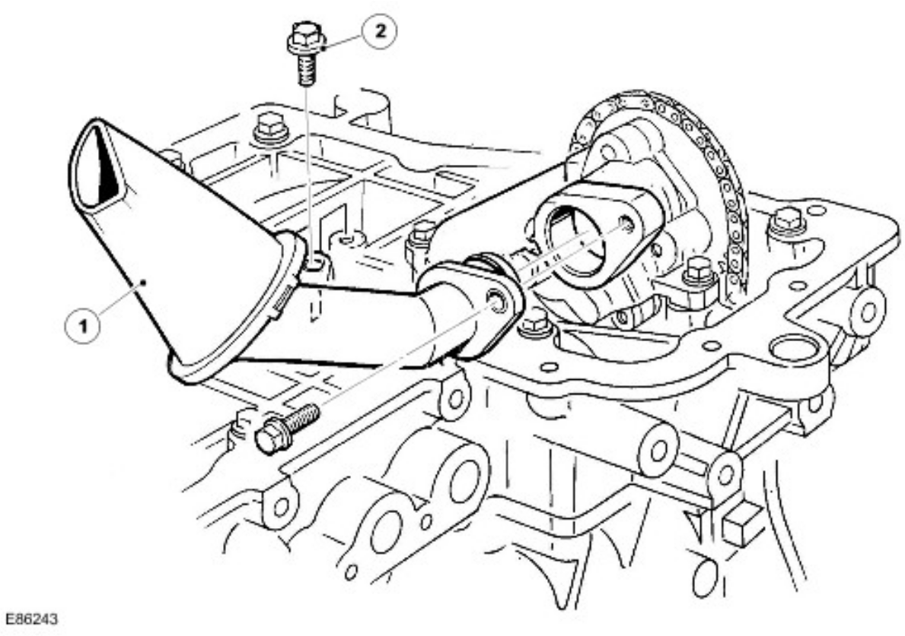
Image reference E86243
| Item | Part Number | Description |
|---|---|---|
| 1 | Oil pick-up pipe | |
| 2 | Bolt (2 off) |
The fabricated steel oil pick-up is immersed in the oil reservoir to provide a supply to the oil pump during all normal vehicle attitudes. A mesh screen in the inlet prevents debris from entering the oil system.
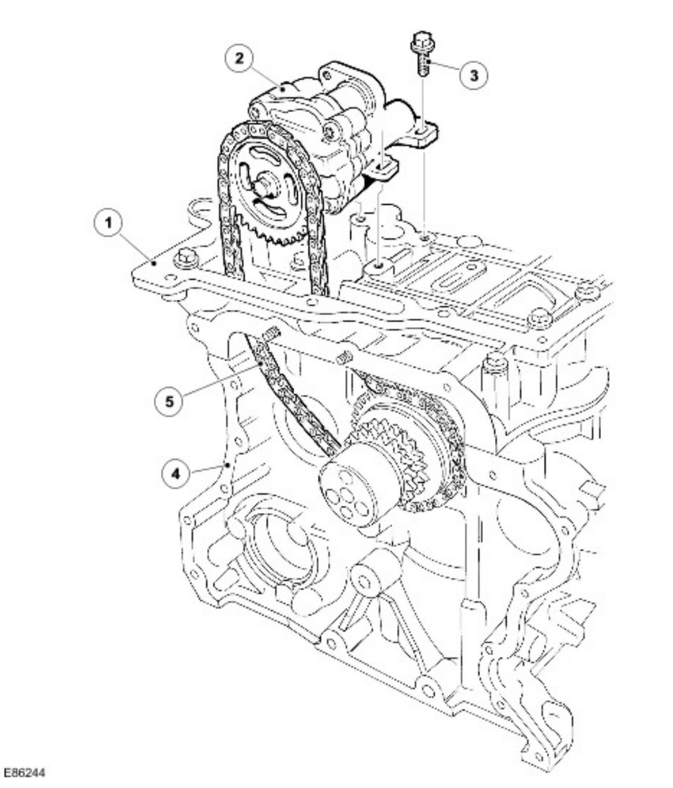
Image reference E86244
| Item | Part Number | Description |
|---|---|---|
| 1 | Ladder frame | |
| 2 | Bolt (4 off) | |
| 3 | Oil pump | |
| 4 | Cylinder block | |
| 5 | Oil pump drive chain |
The oil pump is located on the LH front underside of the ladder frame and is secured by 4 bolts. The unit is driven by a drive chain, via the crankshaft sprocket, and receives its oil feed from the main gallery via drillings in the cylinder block.
The chain is tensioned and guided by means of a hydraulic chain tensioner.
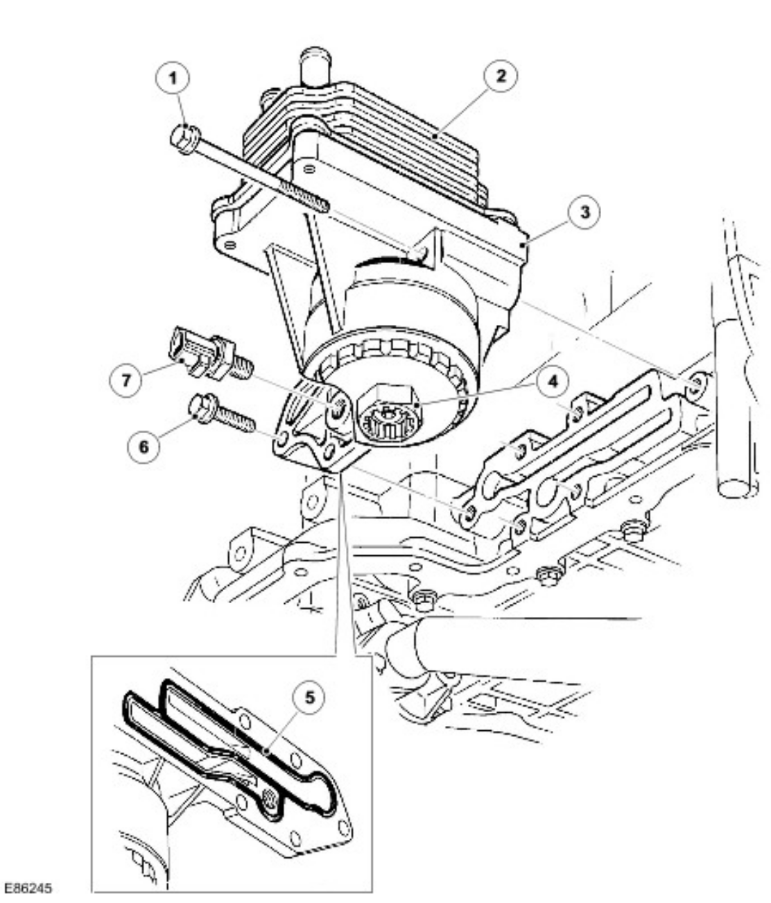
Image reference E86245
| Item | Part Number | Description |
|---|---|---|
| 1 | Bolt (2 off) | |
| 2 | Engine oil cooler | |
| 3 | Oil filter housing | |
| 4 | Oil filter drain plug | |
| 5 | Oil filter and cooler assembly seal | |
| 6 | Bolt (4 off) | |
| 7 | Oil pressure switch |
The engine is lubricated by a forced feed oil circulation system with a oil filter and oil cooler assembly.
The oil filter and oil cooler assembly is attached to the LH side of the ladder frame and consists a full-flow, disposable canister-type filter, oil cooler and oil pressure switch. The mounting plate aligns with the oil gallery in the ladder frame and is sealed by an 'O' ring.
The engine cooling system cools the oil in the oil cooler and is regulated by means of a separate thermostat, which prevents the flow of coolant through the oil cooler when the engine is cold, ensuring the engine oil warms up quickly. The thermostat opens at 75±2°C (167±35°F).
Oil is delivered to and from the oil cooler through galleries in the cylinder block. Hoses from the engine cooling system are connected to 2 pipes on the oil cooler for the supply and return of coolant.
Oil is drawn, via a strainer and pick-up pipe in the sump into oil pump, which has an integral pressure relief valve. The strainer in the pick-up pipe prevents any ingress of foreign particles from passing through to the inlet side of the oil pump and damaging the oil pump and restricting oil drillings. The oil pressure relief valve in the oil pump opens if the oil pressure becomes excessive and diverts oil back around the pump.
The lubrication system is designed so that a higher proportion of oil flow is directed to the cylinder block main oil gallery while a lower proportion of oil flow, (controlled by a restrictor in the oil filter housing), is directed to the engine oil cooler. The remainder of the oil flow from the outlet side of the oil filter is combined with the return flow from the oil cooler before being passed into the cylinder block main oil gallery.
The main oil gallery has drillings that direct the oil to the cylinder head and the main bearings. Cross drillings in the crankshaft main bearings carry the oil to the connecting rod big-end bearings. Oil galleries in the cylinder head carry the oil to the camshafts and the hydraulic lash adjusters.
The oil pressure switch is located in the oil filter and oil cooler mounting plate to sense the oil pressure level before the oil flow enters the main gallery in the cylinder block. A warning lamp in the instrument cluster is illuminated if low oil pressure is detected.
Oil at reduced pressure is directed towards the cylinder head via a restrictor in the cylinder block/cylinder head locating dowel. Oil then passes through a drilling in the cylinder head to the camshaft carrier, where it is directed via separate galleries to the camshaft bearings and hydraulic tappet housings. Return oil from the cylinder head drains into the sump via the cylinder head bolt passages.
As diagnosis of the different areas of the engine is covered in other sections and by general procedures, this section is limited to an oil pressure test.
For specific areas of the engine, refer to the general procedures in this section and the relevant section of the manual.
1. Verify the customer concern.
2. Visually inspect for obvious signs of mechanical or electrical damage.
| Mechanical | Electrical |
|---|---|
|
|
3. If an obvious cause for an observed or reported concern is found, correct the cause (if possible) before proceeding to the next step.
4. Use the approved diagnostic system or a scan tool to retrieve any diagnostic trouble codes (DTCs) before moving onto the symptom chart or DTC index.
NOTE:Prior to checking the engine oil pressure, a road test of 6 miles (10 kilometres), must be carried out. Do not attempt to attain engine normal operating temperature by allowing the engine to idle.
1.
WARNING: The spilling of hot engine oil is unavoidable during this procedure, care must be taken to prevent scalding. Failure to follow this instruction may result in personal injury.
WARNING: Wear protective gloves.
Remove the oil pressure sensor.
Engine Oil Pressure (EOP) Sensor (12.60.50)
2. Install the oil pressure gauge and the oil pressure gauge connector.
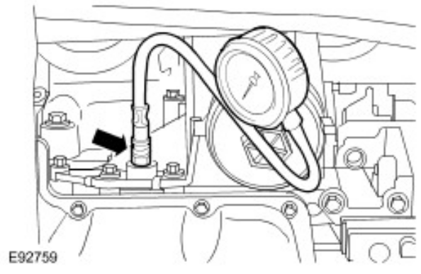
Image reference E92759
3. Check and top-up the engine oil, if required.
4. Start and run the engine.
5. Note the oil pressure readings with the engine running at idle and at 2,000 rpm. Specifications
6. Turn off the engine.
7. Remove the special tools.
8. Install the oil pressure sensor.
Engine Oil Pressure (EOP) Sensor (12.60.50)
9. Check and top-up the engine oil, if required.
1. Disconnect the battery ground cable.
For additional information, refer to Battery Disconnect and Connect
2.
WARNING: Do not work on or under a vehicle supported only by a jack. Always support the vehicle on safety stands.
Raise and support the vehicle.
3. Remove the Hood.
For additional information, refer to Hood
4. Remove the cooling fan shroud.
For additional information, refer to Cooling Fan Shroud (26.25.11)
5. Remove the air cleaner.
For additional information, refer to Air Cleaner (19.10.01)
6. Remove the catalytic converter.
For additional information, refer to Catalytic Converter (17.50.01)
7. Remove the starter motor.
For additional information, refer to Starter Motor (86.60.01)
8. Release the crankshaft position (CKP) sensor and reverse light switch wiring harness from the transmission.
Release the 3 clips.
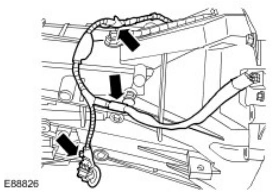
Image reference EB8826
9. Disconnect the reverse light switch electrical connector.
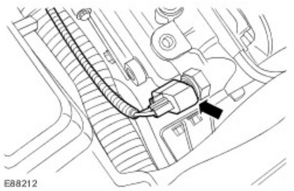
Image reference E88212
10. Release the reverse light switch wiring harness from the transmission.
Release the clip.

Image reference E88217
11. Fully loosen the power steering pump lower 2 bolts.
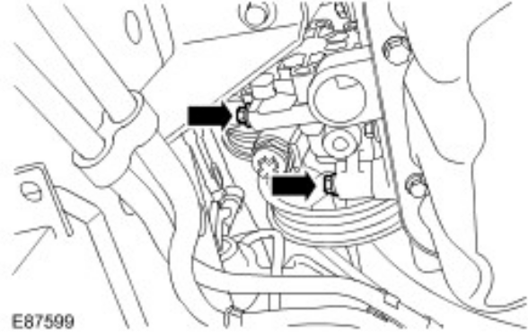
Image reference E87599
12. Disconnect the coolant hose from the engine oil cooler.
Release the clip.
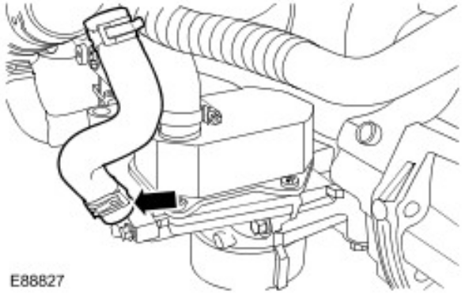
Image reference E88827
13. Disconnect the exhaust gas recirculation (EGR) cooler coolant hose.
Release the clip.
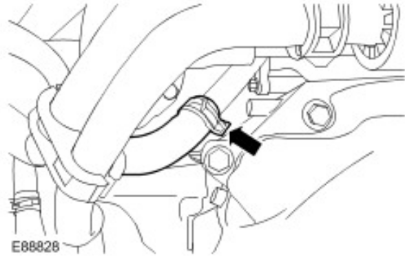
Image reference E88828
14.
 CAUTION: Make sure that all openings are sealed. Use new blanking caps.
CAUTION: Make sure that all openings are sealed. Use new blanking caps.
Disconnect the air conditioning (A/C) high-pressure refrigerant line.
Remove and discard the 2 O-ring seals.
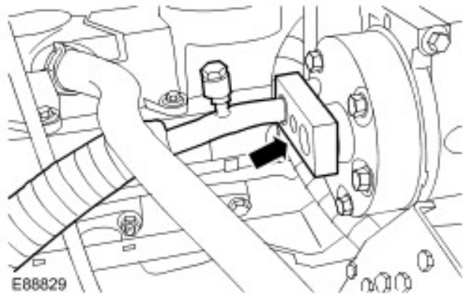
Image reference E88829
15. Remove the charge air cooler inlet hose.
Loosen the 2 clips.
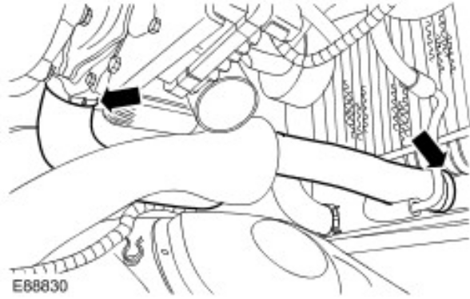
Image reference E68830
16. Remove the charge air cooler outlet hose.
Loosen the 2 clips.
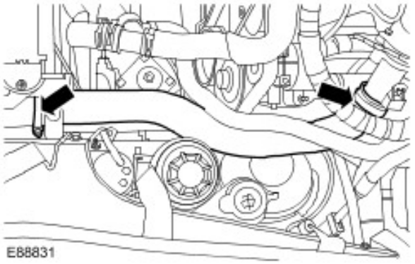
Image reference E88831
17. Disconnect the engine wiring harness electrical connector.
Image reference E88832
18. Disconnect the glow plug electrical connector.
Image reference E88833
19. Release the engine wiring harness.
Disconnect the 3 electrical connectors from the engine control module (ECM).
Release from the 2 clips.
Image reference E88834
20. Release the wiring harness from the heater coolant hose.
Image reference E88835
21. Disconnect the radiator upper coolant hose.
Release the clip.
Image reference E88836
22. Disconnect the 3 coolant hoses from the coolant pump housing.
Release the 3 clips.
Image reference E88837
23. Disconnect the brake booster vacuum line from the brake vacuum pump.
Image reference E85748
24. Release the accessory drive belt from the power steering pump pulley.
Release the tension from the belt.
Image reference E85993
25. Release the power steering pump.
Remove the remaining bolt.
Tie the power steering pump aside.
Image reference E87602
26.
CAUTION: Make sure that all openings are sealed. Use new blanking caps.
Disconnect the 2 fuel lines.
Release the fuel return line from the clip.
Image reference E88838
27. Disconnect the heater coolant hose from the heater control valve.
Release the clip.
Image reference E88839
28. Disconnect the EGR cooler coolant hose.
Release the clip.
Release the coolant hoses from the EGR cooler.
Image reference E88840
29. Release the RH engine mount.
Remove the nut.
Remove the 2 bolts.
Image reference E88841
30. Release the LH engine mount.
Remove the nut.
Remove the 2 bolts.
Image reference E88842
31. Raise and support the engine.
Using a suitable hydraulic jack, support the transmission.
Image reference E87367
32. Remove both of the engine mounts.
33. Remove the 5 LH engine to transmission bolts.
Image reference TIE0018517
34. Remove the 5 RH engine to transmission bolts.
Image reference TIE0018519
35. With assistance, carefully remove the engine.
1. With assistance, carefully install the Clean the component mating faces.engine.
2. Secure the engine to the transmission.
Tighten the bolts to 40 Nm (30 lb.ft).
Remove the hydraulic jack supporting the transmission.
3. Install the LH engine mount.
4. Install the RH engine mount.
5. Secure both of the engine mounts.
Lower the engine on to its mounts.
Tighten the bolts to 80 Nm (59 lb.ft).
Tighten the nuts to 80 Nm (59 lb.ft).
6. Connect the exhaust gas recirculation (EGR) cooler coolant hose.
Secure with the clip.
Secure the coolant hoses to EGR cooler.
7. Connect the heater coolant hose to the heater control valve.
Secure with the clip.
8.
Connect the fuel lines.
Secure with the clip.
Secure the fuel return line in the clip.
9. Secure the power steering pump.
Remove and discard the tie-strap.
Tighten the bolts to 23 Nm (17 lb.ft).
10. Secure the accessory drive belt around the power steering pump pulley.
11. Connect the brake booster vacuum line to the brake vacuum pump.
12. Connect the coolant hoses to the coolant pump housing.
Secure with the clips.
13. Connect the radiator upper coolant hose.
Secure with the clip.
14. Secure the engine wiring harness.
Connect the engine control module (ECM) electrical connectors.
Secure in the clips.
15. Connect the glow plug electrical connector.
16. Connect the engine wiring harness electrical connector.
17. Install the charge air cooler outlet hose.
Tighten the clips.
18. Install the charge air cooler inlet hose.
Tighten the clips.
19.
Connect the air conditioning (A/C) compressor high-pressure line.
Install new O-ring seals.
20. Install the air cleaner.
For additional information, refer to Air Cleaner (19.10.01)
21. Connect the coolant hose to the EGR cooler.
Secure with the clip.
22. Connect the coolant hose to the engine oil cooler.
Secure with the clip.
23. Connect the reverse light switch electrical connector.
24. Secure the crankshaft position (CKP) sensor and reverse light switch wiring harness to the transmission.
Secure the clips.
25. Install the starter motor.
For additional information, refer to Starter Motor (86.60.01)
26. Install the catalytic converter.
For additional information, refer to Catalytic Converter (17.50.01)
27. Install the cooling fan shroud.
For additional information, refer to Cooling Fan Shroud (26.25.11)
28. Connect the battery ground cable.
For additional information, refer to Battery Connect
29. Install the hood.
For additional information, refer to Hood
Timing tool, crankshaft, 303-698
1.
WARNING: Do not work on or under a vehicle supported only by a jack. Always support the vehicle on safety stands.
Raise and support the vehicle.
2. Disconnect the battery ground cable.
For additional information, refer to Battery Disconnect and Connect
3. Remove the valve cover.
For additional information, refer to Valve Cover
4. Remove the timing cover.
For additional information, refer to Timing Cover
5. Remove the generator.
For additional information, refer to Generator (86.10.02)
6. Remove the crankshaft position (CKP) sensor.
For additional information, refer to Crankshaft Position (CKP) Sensor (18.30.12)
7. Remove the 2 rocker shafts.
Remove and discard the 10 bolts.
Image reference TIE0006906
8. Loosen the 6 camshaft sprocket bolts.
Image reference ELE0012549
9. Detension and lock the timing chain tensioner.
Image reference ELE0015463
10. Remove the timing chain tensioner and the RH timing chain guide.
Remove the 2 bolts.
Remove the nut.
Image reference ELE0015445
11. Remove the upper timing chain guide.
Remove the 2 bolts.
Image reference TE0006889
12. Remove the camshaft sprockets and the timing chain.
Remove the 6 bolts.
Image reference ELE0012549
13. Remove the air conditioning compressor.
For additional information, refer to Air Conditioning (A/C) Compressor (82.10.20)
14. Remove the turbocharger heatshield.
Remove the 5 bolts.
Image reference E86031
15. Release the turbocharger heat shield bracket.
Remove the bolt.
Image reference E86085
16. Remove the turbocharger heat shield bracket.
Remove the bolt.
Image reference E89630
17. Remove the generator mounting bracket.
Remove the 8 bolts.
Image reference E89043
18. Disconnect the camshaft position (CMP) sensor.

Image reference E86068
19. Release the engine wiring harness.
Release the 3 clips.
Image reference E89496
20. Release the engine wiring harness support bracket.
Remove the bolt.
Remove the nut.
Image reference E89497
21. Release the oil level indicator tube.
Remove the bolt.
Image reference E86087
22.
CAUTION: Remove the bolts in the sequence shown. Failure to follow this instruction may result in damage to the vehicle.
Remove the camshaft carrier.
Remove the 25 bolts.
Image reference ELE0012982
23. Remove both of the camshafts.
1.
CAUTION: Do not turn the crankshaft when the special tool is fully located into the flywheel. Failure to follow this instruction may result in damage to the vehicle.
Rotate the crankshaft to 50 degrees before top dead center (BTDC).
Install the special tool through the CKP sensor hole.
Image reference E89516
2. NOTE:Clean the component mating face.
Apply a 2.5 mm (0.1 inches) diameter bead of the specified sealant to the cylinder head.
Image reference ELE0013422
3. NOTE:Clean the component mating faces.
Install both of the camshafts.
Lubricate the camshaft journals and the camshaft lobes with clean engine oil.
4.
CAUTION: Tighten the bolts in the sequence shown, failure to follow this instruction may result in damage to the vehicle.
NOTE:Clean the component mating face.
Install the camshaft carrier.
Stage 1: Tighten the bolts 1 through 22 to 23 Nm (16 lb.ft).
Stage 2: Tighten the bolts 23 through 25 to 10 Nm (7 lb.ft).
Image reference ELE0013002
5. Secure the oil level indicator tube.
Tighten bolt to 10 Nm (7 lb.ft).
6. Secure the engine wiring harness support bracket.
Tighten nut to 10 Nm (7 lb.ft).
Tighten bolt to 10 Nm (7 lb.ft).
7. Secure the engine wiring harness.
Secure the clips.
8. Install the generator mounting bracket.
Tighten the bolts to 25 Nm (18 lb.ft).
9. Install the turbocharger heat shield bracket.
Tighten the M6 bolt to 10 Nm (7 lb.ft).
Tighten the M8 bolt to 20 Nm (15 lb.ft).
10. Install the turbocharger heatshield.
Tighten to 7 Nm (5 lb.ft).
11. Install the A/C compressor.
For additional information, refer to Air Conditioning (A/C) Compressor (82.10.20)
12.
CAUTION: Make sure the colored links align to the timing marks. Failure to follow this instruction may result in damage to the vehicle.
Install both of the camshaft sprockets and the timing chain.
Image reference E46627
13.
CAUTION: Make sure the timing chain tensioner is fully retracted before installation. Failure to follow this instruction may result in damage to the vehicle.
Install the timing chain tensioner and the timing chain guides.
Tighten the bolts to 15 Nm (11 lb.ft).
Tighten the nut to 15 Nm (11 lb.ft).
14. Using a suitable 6 mm bar, lock the camshaft sprockets.
Loosely install the camshaft sprocket bolts.
Image reference ELE0019535
15. Loosen the 4 bolts on the fuel injection pump sprocket.
Image reference ELE0013424
16. NOTE:Make sure the timing chain tensioner is completely released.
Unlock the timing chain tensioner.
Remove the pin.
17. Secure the camshaft sprockets and the fuel injection pump sprocket.
Tighten the camshaft sprocket bolts to 35 Nm (24 lb.ft).
Tighten the fuel injection sprocket bolts to 33 Nm (26 lb.ft).
18. Remove the special tool.
19. Remove the 6 mm bars.
20.
CAUTION: Make sure that new bolts are installed.
CAUTION: Make sure that the oil supply holes in the rocker shafts point downwards. Failure to follow this instruction may result in damage to the vehicle.
NOTE:Tighten the bolts in the stages shown.
Install the rocker shafts.
Stage 1: Tighten the bolts to 13 Nm (10 lb.ft).
Stage 2: Tighten the bolts a further 45 degrees.
21. Rotate the crankshaft clockwise 2 complete revolutions.
22.
CAUTION: Make sure the special tool is fully located in the flywheel.
Check the timing by inserting the special tool in the CKP sensor hole.
23. Check the camshaft timing by inserting a suitable 6 mm bar through the holes in the camshaft sprockets
24. Remove the special tool.
25. Remove the 6 mm bars.
26. Install the CKP sensor.
For additional information, refer to Crankshaft Position (CKP) Sensor (18.30.12)
27. Install the timing cover.
For additional information, refer to Timing Cover
28. Install the valve cover.
For additional information, refer to Valve Cover
29. Connect the battery ground cable.
For additional information, refer to Battery Connect
1. Disconnect the battery ground cable.
For additional information, refer to Battery Disconnect and Connect
2. Remove the cooling fan.
For additional information, refer to Cooling Fan (26.25.19)
3. Release the tension from the accessory drive belt.
Rotate the accessory drive belt tensioner clockwise.
Image reference E85993
4. Remove the crankshaft pulley.
Remove and discard the 3 bolts.
Image reference E88571
1.
CAUTION: New crankshaft pulley bolts must be installed.
NOTE:Clean the component mating faces.
Install the crankshaft pulley.
Stage 1: Tighten the bolts to 45 Nm (33 lb.ft).
Stage 2: Tighten the bolts a further 90 degrees.
Image reference E88571
2. Secure the accessory drive belt.
Rotate the accessory drive belt tensioner clockwise.
3. Install the cooling fan.
For additional information, refer to Cooling Fan (26.25.19)
4. Connect the battery ground cable.
For additional information, refer to Battery Connect
Remover/Installer, Front Oil Seal, 303-679
1. Disconnect the battery ground cable.
For additional information, refer to Battery Disconnect and Connect
2. Remove the crankshaft pulley.
For additional information, refer to Crankshaft Pulley (12.21.01)
3. Using the special tool, remove and discard the crankshaft front oil seal.
Image reference E86310
1.
NOTE:Clean the component mating faces.
NOTE:Install a new crankshaft front oil seal.
NOTE:A new crankshaft front oil seal is supplied with an alignment sleeve that will be pushed out during installation.
Using the special tool, install the crankshaft front oil seal.
Image reference E89969
2. Install the crankshaft pulley.
For additional information, refer to Crankshaft Pulley (12.21.01)
3. Connect the battery ground cable.
For additional information, refer to Battery Connect
1.
WARNING: Do not work on or under a vehicle supported only by a jack. Always support the vehicle on safety stands.
Raise and Support the vehicle.
2. Disconnect the battery ground cable.
For additional information, refer to Battery Disconnect and Connect
3. Remove the flywheel.
For additional information, refer to Flywheel (12.53.07)
4. Remove and discard the crankshaft rear seal.
Remove and discard the 8 bolts.
Image reference TIE0012994
1.
CAUTION: A new crankshaft rear seal is supplied with an alignment sleeve that must not be removed until the crankshaft rear seal is fully installed. Failure to follow this instruction may result in damage to the vehicle.
NOTE:Clean the component mating faces.
Check the 2 foam pads are located on the ladder frame gasket.
If the ladder frame gasket tabs are present, trim using a suitable tool flush to the engine block and ladder frame.
Apply a thin layer of sealant to the areas shown.
Image reference E58864
2.
CAUTION: Install the new crankshaft rear seal within five minutes of applying the recommended sealant.
CAUTION: Do not add the sealant anywhere other than the area shown.
Using the recommended sealant completely fill the square areas shown.For additional information, refer to Specifications
Image reference E58886
3. Install the crankshaft rear seal.
Tighten the bolts in the sequence shown to 10 Nm (7 lb.ft).
Image reference E46420
4. Remove and discard the crankshaft rear seal alignment sleeve.
5. Install the flywheel.
For additional information, refer to Flywheel (12.53.07)
6. Connect the battery ground cable.
For additional information, refer to Battery Connect
1.
WARNING: Do not work on or under a vehicle supported only by a jack. Always support the vehicle on safety stands.
Raise and support the vehicle.
2. Disconnect the battery ground cable.
For additional information, refer to Battery Disconnect and Connect
3. Remove the camshafts.
For additional information, refer to Camshafts
4. Remove the intake manifold.
For additional information, refer to Intake Manifold (30.15.02)
5. NOTE:Engine shown removed for clarity.
Release the exhaust gas recirculation (EGR) cooler.
Remove the bolt.
Image reference E89629
6. Release the exhaust manifold.
Remove the 6 bolts.
Remove and discard the 2 nuts.
Remove and discard the 2 studs.
Remove and discard the gasket.
Image reference E89631
7. Release the glow plug wiring harness.
Image reference E89632
Remove the 4 nuts.
8.
CAUTION: The cylinder head must not be placed face down. Failure to follow this instruction may result in damage to the vehicle.
With assistance, carefully remove the cylinder head.
Remove and discard the bolts numbered 1 through 18.
Remove bolt 19.
Remove and discard the gasket.
Image reference E89633
9. NOTE:Do not dismantle further if component is removed for access only.
Remove the 4 glow plugs.
Image reference E89634
1. Install the glow plugs.
Tighten the glow plugs to 12 Nm (9 lb.ft).
2.
NOTE:Clean the component mating face.
NOTE:Measure the piston protrusion of each cylinder at top dead center (TDC).
Measure the distance between the piston crown and the cylinder block at the points indicated.
Image reference E48322
3. Determine the cylinder head gasket thickness.
For additional information, refer to Specifications
4.
CAUTION: The thickness of the new cylinder head gasket depends on the piston protrusion (hole/tooth marked).
Install a new cylinder head gasket.
5.
CAUTION: Install new cylinder head bolts.
NOTE:Clean the component mating face.
Install the cylinder head.
Tighten the bolts in the sequence shown in six stages.
Stage 1: Tighten bolts 1 through 10 to 20 Nm.
Stage 2: Tighten bolts 11 through 18 to 10 Nm.
Stage 3: Tighten bolts 1 through 10 to 40 Nm.
Stage 4: Tighten bolts 11 through 18 to 20 Nm.
Stage 5: Tighten bolts 1 through 10 to 180 degrees.
Stage 6: Tighten bolts 11 through 18 to 180 degrees.
Stage 7: Tighten the M6 bolt to 10 Nm (7 lb.ft).
Image reference TIE0017814
6. Secure the glow plug wiring harness.
Tighten the nuts to 3 Nm (2 lb.ft).
7.
NOTE:Clean the component mating faces.
Secure the exhaust manifold.
Install a new gasket.
Tighten the new studs to 20 Nm (15 lb.ft).
Tighten the new nuts to 40 Nm (30 lb.ft).
Tighten the bolts to 40 Nm (30 lb.ft).
8. Secure the EGR cooler.
Tighten the bolt to 20 Nm (15 lb.ft).
9. Install the intake manifold.
For additional information, refer to Intake Manifold (30.15.02)
10. Install the camshafts.
For additional information, refer to Camshafts
11. Connect the battery ground cable.
For additional information, refer to Battery Connect
1. Disconnect the battery ground cable.
For additional information, refer to Battery Disconnect and Connect
2. Remove the hood.
For additional information, refer to Hood
3. Remove the cooling fan upper shroud.
Release the 6 clips.

Image reference E86148
4. Remove the air cleaner outlet pipe.
For additional information, refer to Air Cleaner Outlet Pipe
5. Remove the RH engine mount nut.
Image reference E87370
6. Disconnect the charge air cooler outlet hose.
Loosen the clip.
Image reference E90416
7. Remove the LH engine mount nut.
Image reference E87368
8. Using a suitable hydraulic jack, raise the engine to a maximum of 45 mm (1.77 inches).
Image reference E87372
9. Remove the LH engine mount.
Remove the 2 bolts.
Image reference E87369
1. To install, reverse the removal procedure.
Tighten to 80 Nm (59 lb.ft).
Image reference E87369
2. Tighten to 80 Nm (59 lb.ft).
Image reference E87368
3. Tighten to 3 Nm (2 lb.ft).
Image reference E90416
4. Tighten to 80 Nm (59 lb.ft).
Image reference E87370
5. Connect the battery ground cable.
For additional information, refer to Battery Connect
1. Disconnect the battery ground cable.
For additional information, refer to Battery Disconnect and Connect
2. Remove the hood.
For additional information, refer to Hood
3. Remove the cooling fan upper shroud.
Release the 6 clips.
Image reference E86148
4. Remove the LH engine mount nut.
Image reference E87368
5. Remove the turbocharger heat shield.
Remove the 5 bolts.
Image reference E86031
6. Remove the air cleaner outlet pipe.
For additional information, refer to Air Cleaner Outlet Pipe
7. Disconnect the charge air cooler inlet hose.
Release the clip.
Image reference E86110
8. Remove the RH engine mount nut.
Image reference E87370
9. Using a suitable hydraulic jack, raise the engine to a maximum of 45 mm (1.77 inches).
Image reference E87372
10. Remove the RH engine mount.
Remove the 2 bolts.
Image reference E87371
1. To install, reverse the removal procedure.
Tighten to 80 Nm (59 lb.ft).
Image reference E87371
2. Tighten to 80 Nm (59 lb.ft).
Image reference E87370
3. Tighten to 3 Nm (2 lb.ft).
Image reference E86110
4. Tighten to 10 Nm (7 lb.ft).
Image reference E86031
5. Tighten to 80 Nm (59 lb.ft).
Image reference E87368
6. Connect the battery ground cable.
For additional information, refer to Battery Connect
1. Disconnect the battery ground cable.
For additional information, refer to Battery Disconnect and Connect
2. Remove the turbocharger.
For additional information, refer to Turbocharger (19.42.01)
3. Remove the turbocharger heat shield bracket.
Remove the bolt.
Image reference E86085
4. Remove the 2 exhaust manifold to exhaust gas recirculation (EGR) cooler bolts.
Image reference E86086
5.
CAUTION: Make sure that all openings are sealed. Use new blanking caps.
Remove the oil level indicator and oil level tube.
Remove and discard the O-ring seal.
Image reference E86087
6.
CAUTION: Make sure that all openings are sealed. Use new blanking caps.
Remove the exhaust manifold.
Remove the 6 bolts and 2 nuts.
Remove and discard the exhaust manifold gasket.
Image reference E86088
7. Remove and discard the 2 exhaust manifold studs.
Image reference ELE0015460
1. Install new exhaust manifold studs.
Tighten to 20 Nm (14 lb.ft).
Image reference ELE0015460
2.
NOTE:Remove and discard the blanking caps.
NOTE:Clean the component mating faces.
Install the exhaust manifold.
Install a new exhaust manifold gasket.
Tighten to 40 Nm (30 lb.ft).
Image reference E86088
3. NOTE:Remove and discard the blanking caps.
Install the oil level indicator and oil level tube.
Install a new O-ring seal.
Tighten to 23 Nm (17 lb.ft).
Image reference E86087
4. Install the exhaust manifold to EGR cooler bolts.
Tighten to 23 Nm (17 lb.ft).
Image reference E86086
5. Install the turbocharger heat shield bracket.
Tighten to 10 Nm (7 lb.ft).
Image reference E86085
6. Install the turbocharger.
For additional information, refer to Turbocharger (19.42.01)
7. Connect the battery ground cable.
For additional information, refer to Battery Connect
1. NOTE:Clean the component mating faces.
NOTE:New bolts must be installed.
NOTE:Tighten the bolts in the sequence shown.
Install the flywheel.
Stage 1: Tighten the bolts 1 through 8 to 25 Nm (18 lb.ft).
Stage 2: Tighten the bolts 1 through 8 to 40 Nm (30 lb.ft).
Stage 3: Tighten the bolts 1 through 8 a further 48 degrees.
Image reference TIE0013727
2. Install the clutch disc and pressure plate.
For additional information, refer to Clutch Disc and Pressure Plate (33.10.01)
3. Connect the battery ground cable.
For additional information, refer to Battery Connect
WARNING: The spilling of fuel is unavoidable during this operation. Make sure that all necessary precautions are taken to prevent fire and explosion.
WARNING: Do not carry or operate cellular phones when working on or near any fuel related components. Highly flammable vapors are always present and may ignite. Failure to follow these instructions may result in personal injury.
WARNING: Do not smoke or carry lighted tobacco or open flame of any type when working on or near any fuel related components. Highly flammable vapors are always present and may ignite. Failure to follow these instructions may result in personal injury.
WARNING: If fuel contacts the eyes, flush the eyes with cold water or eyewash solution and seek immediate medical attention.
WARNING: Wash hands thoroughly after fuel handling, as prolonged contact may cause irritation. Should irritation develop, seek medical attention.
WARNING: Do not carry out any repairs to the fuel system with the engine running. The fuel pressure within the system can be as high as 2000 bar (29,008 lb-sq-in). Failure to follow this instruction may result in personal injury. [cite:
CAUTION: Diesel fuel injection equipment is manufactured to very precise tolerances and fine clearances. It is therefore essential that absolute cleanliness is observed when working with these components. Always install new blanking plugs to any open orifices or lines. Failure to follow this instruction may result in foreign matter ingress to the fuel injection system. [cite: , ]
1. Disconnect the battery ground cable.
For additional information, refer to Battery Disconnect and Connect
2. Using the pneumatic vacuum gun, vacuum foreign material from the high-pressure fuel supply lines, the fuel rails and the fuel injection pump.
For additional information, refer to Fuel Injection Component Cleaning
3. Release the fuel line.
Image reference E86524
4.
CAUTION: Make sure that all openings are sealed. Use new blanking caps.
Disconnect the fuel return line.
Image reference E86525
5. Disconnect the camshaft position (CMP) sensor electrical connector.
Image reference E86068
6. Release the wiring harness clip.
Image reference E86526
7. Disconnect the exhaust gas recirculation (EGR) valve electrical connector.
Image reference E86527
8. Remove the 2 bolts from the intake manifold.
Image reference E86528
9.
CAUTION: Make sure that all openings are sealed. Use new blanking caps.
Remove the intake manifold.
Remove the 9 bolts.
Image reference E86529
10. Remove and discard the 9 O-ring seals from the intake manifold.
Image reference E86530
1. NOTE:Clean the component mating faces.
Install new O-ring seals to the intake manifold.
2. NOTE:Remove and discard the blanking caps.
Install the intake manifold.
Tighten the bolts to 15 Nm (11 lb.ft).
Image reference E86529
3. Tighten the bolts to 10 Nm (7 lb.ft).
Image reference E86528
4. Connect the EGR valve electrical connector.
5. Connect the CMP sensor electrical connector.
Secure the wiring harness.
6. NOTE:Remove and discard the blanking caps.
Connect the fuel return line.
7. Secure the fuel line.
8. Connect the battery ground cable.
For additional information, refer to Battery Connect
1. Disconnect the battery ground cable.
For additional information, refer to Battery Disconnect and Connect
2. Remove the oil filter housing.
For additional information, refer to Oil Filter Housing (12.60.27)
3.
CAUTION: Make sure that all openings are sealed. Use new blanking caps.
Remove the oil cooler.
Remove the 5 bolts.
Remove and discard the O-ring seals.
Image reference E911011
1. NOTE:Remove and discard the blanking caps.
NOTE:Clean the component mating faces.
NOTE:Install a new O-ring seals.
To install, reverse the removal procedure.
Tighten the bolts to 10 Nm (7 lb.ft).
Image reference E91101
2. Connect the battery ground cable.
For additional information, refer to Battery Connect
1. Disconnect the battery ground cable.
For additional information, refer to Battery Disconnect and Connect
2.
WARNING: Do not work on or under a vehicle supported only by a jack. Always support the vehicle on safety stands.
Raise and support the vehicle.
3. Drain the cooling system.
For additional information, refer to Cooling System Draining, Filling and Bleeding (26.10.01)
4. Disconnect the engine oil pressure (EOP) sensor electrical connector.

Image reference E86649
5. Disconnect the coolant hose from the engine oil cooler.
Release the clip.
Image reference E88827
6. Disconnect the coolant hose.
Release the clip.
Image reference E90169
CAUTION: Make sure that all openings are sealed. Use new blanking caps.
Remove the oil filter housing assembly.
Remove the 6 bolts.
Remove and discard the gasket.
Image reference E90172
1. NOTE:Remove and discard the blanking caps.
NOTE:Clean the component mating faces.
NOTE:Install a new gasket.
To install, reverse the removal procedure.
Tighten the bolts to 23 Nm (17 lb.ft).
Image reference E90172
2. Connect the battery ground cable.
For additional information, refer to Battery Connect
1.
WARNING: Do not work on or under a vehicle supported only by a jack. Always support the vehicle on safety stands.
Raise and support the vehicle.
For additional information, refer to Lifting
2. Drain the engine oil.
For additional information, refer to Engine Oil Draining and Filling (12.60.05)
3. Remove the 16 oil pan bolts.
Image reference E85756
CAUTION: Avoid damage to the oil pan mating face. Failure to follow this instruction may cause damage to the vehicle.
NOTE:Lubricate the suitable tool with clean engine oil.
Using a suitable tool remove and discard the oil pan.
Image reference E89943
1.
CAUTION: Avoid damage to the oil pan mating face of the cylinder block. Failure to follow this instruction may cause damage to the vehicle.
CAUTION: A new oil pan must be installed. Failure to follow this instruction may cause damage to the vehicle.
CAUTION: Install the oil pan within five minutes of applying the sealer. Failure to follow this instruction may cause damage to the vehicle.
NOTE:Clean the cylinder block mating faces,
Apply a 3mm bead of sealer WSE-M4G323-A4 to the oil pan.
Image reference ELE0013450
2. NOTE:Do not fully tighten the oil pan bolts at this stage.
Install the oil pan.
3. Tighten the oil pan bolts.
Tighten the bolts in the sequence shown in two stages.
Stage 1: Tighten bolts 1 through 16 to 7 Nm (5 lb.ft).
Stage 2: Tighten bolts 1 through 16 to 14 Nm (10 lb.ft).
Image reference E46423
4. Fill the engine with engine oil.
For additional information, refer to Engine Oil Draining and Filling (12.60.05)
Aligner, oil pump 303-705
1. NOTE:Do not fully tighten the oil pump bolts at this stage.
Install the oil pump.
Install the chain on to the oil pump sprocket.
Loosely install the oil pump bolts.
2. Secure the oil pump.
Push the oil pump forward so that the sprocket is in contact with the special tool.
Tighten the bolts to 10 Nm (7 lb.ft).
3. Remove the special tool.
Remove the 2 bolts.
4. Install the oil pickup pipe.
Tighten the bolts to 10 Nm (7 lb.ft).
5. Install the oil pan.
For additional information, refer to Oil Pan (12.60.44)
6. Connect the battery ground cable.
For additional information, refer to Battery Connect
1. Disconnect the battery ground cable.
For additional information, refer to Battery Disconnect and Connect
2. Remove the valve cover.
For additional information, refer to Valve Cover
3. Remove the rocker arm carrier.
Remove the 10 bolts.
Image reference E75617
4. NOTE:One rocker arm shown, others similar.
Remove the rocker arm.
Image reference E87604
1. NOTE:Clean the component mating faces.
Install the rocker arm.
2. NOTE:Clean the component mating faces.
Install the rocker arm carrier.
Stage 1: Tighten to 10 Nm (7 lb.ft).
Stage 2: Tighten a further 30 degrees.
Image reference E75617
3. Install the valve cover.
For additional information, refer to Valve Cover
4. Connect the battery ground cable.
For additional information, refer to Battery Connect
Aligner Tool, Timing cover 303-682
1.
WARNING: Do not work on or under a vehicle supported only by a jack. Always support the vehicle on safety stands.
Raise and support the vehicle.
2. Disconnect the battery ground cable.
For additional information, refer to Battery Disconnect and Connect
3. Drain the cooling system.
For additional information, refer to Cooling Systern Draining, Filling and Bleeding (26.10.01)
4. Remove the accessory drive component bracket.
For additional information, refer to Accessory Drive Component Bracket
5. Reposition the cylinder head coolant outlet elbow.
Remove the nut.
Remove the 2 bolts.
Remove and discard the O-ring seal.
Image reference E88983
6. Remove the crankshaft front seal.
For additional information, refer to Crankshaft Front Seal (12.21.14)
7. Reposition the coolant pump.
Remove the 4 bolts.
Remove and discard the gasket.
Image reference E88984
8 . Using a suitable tool, remove and discard the timing cover.
Remove the 20 bolts.
Remove the 2 nuts
Image reference ELE0015440
1 . Clean the engine timing cover mating faces.
2 .
CAUTION: A new engine timing cover must be installed. Failure to follow this instruction may result in damage to the vehicle.
CAUTION: Install the engine timing cover within five minutes of applying the sealer. Failure to follow this instruction may result in damage to the vehicle.
NOTE:Some variation in the illustrations may occur, but the essential information is always correct.
Apply a 3 mm (0.118 inch) bead of sealer to the four T-joints.
Image reference E100334
3 . Apply a 3 mm (0.118 inch) bead of selaer to the engine timing cover.
Image reference TIE0020780
4 .
WARNING: Make sure that the engine timing cover does not come into contact with the engine until correct position is obtained.
With the aid of a second technician, position the engine timing cover.
5 . NOTE: Engine shown removed for clarity.
Using the special tool, align the engine timing cover.
Intall and tighten 2 engine timing cover bolts to 6 Nm.
Install and tighten the remaining 16 engine timing cover bolts and 2 nuts to 6 Nm.
Slacken the engine timing cover bolts and nuts 360 degrees.
Install the special tool.
Image reference TIE0020783
6 . Tighten the engine timing cover nuts and bolts.
Tighten the engine timing cover nuts and bolts to 3 Nm.
Tighten the engine timing cover nuts and bolts in the following sequence:
Tighten the 2 bolts indicated to 11 Nm.
Tighten the remaining nuts and bolts to 10 Nm.
Image reference E100335
7 . NOTE: Secure the coolanClean the component mating faces.t pump.
Install a new gasket.
Tighten the bolts to 22 Nm (16 lb.ft).
8 .
NOTE:Clean the component mating faces.
Secure the cylinder head coolant outlet elbow.
Install new O-ring seal.
Tighten the nut to 22 Nm (16 lb.ft).
Tighten the bolts to 22 Nm (16 lb.ft).
9 . Install the accessory drive component bracket.
For additional information, refer to Accessory Drive Component Bracket
10 . Connect the battery ground cable.
For additional information, refer to Battery Connect
11 . Fill and bleed the cooling system.
For additional information, refer to Cooling System Draining, Filling and Bleeding (26.10.01)
Timing tool, crankshaft 303-698
1 . Raise and support the vehicle.
WARNING: Do not work on or under a vehicle supported only by a jack. Always support the vehicle on safety stands.
2 . Disconnect the battery ground cable.
For additional information, refer to Battery Disconnect and Connect
3 . Remove the timing cover.
For additional information, refer to Timing Cover
4 . Remove the crankshaft position (CKP) sensor.
For additional information, refer to Crankshaft Position (CKP) Sensor (18.30.12)
5 .
CAUTION: Do not turn the crankshaft when the special tool is fully located into the flywheel. Failure to follow this instruction may result in damage to the vehicle.
Rotate the crankshaft to 50 degrees before top dead center (BTDC).
Install the special tool through the CKP sensor hole.
Image reference E89516
6 . Using suitable 6 mm bars, lock the camshaft sprockets.
7 . Loosen the 6 camshaft sprocket bolts.
8 . Loosen the 4 fuel injection pump sprocket bolts.
Image reference ELE0012549
9 . Detension and lock the timing chain tensioner.
1) Retract the pawl.
2) Push the lock in.
3) Insert a suitable pin.
Image reference ELE0015463
10 . Remove the timing chain tensioner and the RH timing chain guide.
Remove the 2 bolts.
Remove the nut.
Image reference ELE0015445
11 . Remove the upper timing chain guide.
Remove the 2 bolts.
Image reference TIE0006889
12 . Remove the timing chain.
Image reference E46626
1 . Install the timing chain.
CAUTION: Make sure the colored links align to the timing marks. Failure to follow this instruction may result in damage to the vehicle.
2 .
CAUTION: Make sure the timing chain tensioner is fully retracted before installation. Failure to follow this instruction may result in damage to the vehicle.
Install the timing chain tensioner and the timing chain guides.
Tighten the bolts to 15 Nm (11 lb.ft).
Tighten the nut to 15 Nm (11 lb.ft).
3 . NOTE:Make sure the timing chain tensioner is completely released.
Unlock the timing chain tensioner.
Remove the pin.
4 . Secure the camshaft sprockets and the fuel injection pump sprocket.
Tighten the camshaft sprocket bolts to 35 Nm (24 lb.ft).
Tighten the fuel injection sprocket bolts to 33 Nm (26 lb.ft).
5 . Remove the special tool.
6 . Remove the 6 mm bars.
7 . Rotate the crankshaft clockwise 2 complete revolutions.
8 .
CAUTION: Make sure the special tool is fully located in the flywheel.
Check the timing by inserting the special tool in the CKP sensor hole.
9 . Check the camshaft timing by inserting a suitable 6 mm bar through the holes in the camshaft sprockets
10 . Remove the special tool.
11 . Remove the 6 mm bars.
12 . Install the CKP sensor.
For additional information, refer to Crankshaft Position (CKP) Sensor (18.30.12)
13 . Install the timing cover.
For additional information, refer to Timing Cover
14 . Connect the battery ground cable.
For additional information, refer to Battery Connect
WARNING: The spilling of fuel is unavoidable during this operation. Make sure that all necessary precautions are taken to prevent fire and explosion.
WARNING: Do not carry or operate cellular phones when working on or near any fuel related components. Highly flammable vapors are always present and may ignite. Failure to follow these instructions may result in personal injury.
WARNING: Do not smoke or carry lighted tobacco or open flame of any type when working on or near any fuel related components. Highly flammable vapors are always present and may ignite. Failure to follow these instructions may result in personal injury.
WARNING: If fuel contacts the eyes, flush the eyes with cold water or eyewash solution and seek immediate medical attention.
WARNING: Wash hands thoroughly after fuel handling, as prolonged contact may cause irritation. Should irritation develop, seek medical attention.
WARNING: Do not carry out any repairs to the fuel system with the engine running. The fuel pressure within the system can be as high as 2000 bar (29,008 lb-sq-in). Failure to follow this instruction may result in personal injury. [cite: , 1879]
CAUTION: Diesel fuel injection equipment is manufactured to very precise tolerances and fine clearances. It is therefore essential that absolute cleanliness is observed when working with these components. Always install new blanking plugs to any open orifices or lines. Failure to follow this instruction may result in foreign matter ingress to the fuel injection system. [cite: , 1882, 1883]
1 . Disconnect the battery ground cable.
For additional information, refer to Battery Disconnect and Connect
2 . Disconnect the positive crankcase ventilation (PCV) hose.
3 . Remove the fuel injectors.
For additional information, refer to Fuel Injector (19.60.10)
4 . Release the fuel line.
5 . Disconnect the fuel return line.
CAUTION: Make sure that all openings are sealed. Use new blanking caps.
6 . Disconnect the fuel return line.
CAUTION: Make sure that all openings are sealed. Use new blanking caps.
7 . Remove the fuel return line.
CAUTION: Make sure that all openings are sealed. Use new blanking caps.
8 . Release the engine wiring harness from the valve cover.
9 . Remove the valve cover.
Fully loosen the 12 bolts.
Remove and discard the gasket.
1 . To install, reverse the removal procedure.
CAUTION: Tighten the bolts in the sequence shown.
Install a new gasket.
Tighten the bolts to 10 Nm (7 lb.ft).
2 . Connect the battery ground cable.
For additional information, refer to Battery Connect
1 . Install the engine to suitable engine stand.
2 . Drain the engine oil.
z Position a container to collect the engine oil.
z Remove the drain plug.
z Allow the engine oil to drain.
3 . Disconnect the crankshaft position (CKP) sensor electrical connector.
4 . Remove the CKP sensor.
z Remove the bolt.
5 . Remove the CKP sensor bracket.
z Remove the 2 bolts.
6 . Remove the clutch disc and the clutch pressure plate.
CAUTION: Loosen the clutch pressure plate bolts by 2 turns at a time in the sequence shown.
z Remove the 6 bolts.
7 . Remove the flywheel.
z Remove and discard the 8 bolts.
8 . Remove and discard the crankshaft rear seal.
z Remove the 8 bolts.
9 . Remove the exhaust gas recirculation (EGR) valve and the EGR cooler.
z Disconnect the EGR valve electrical connector.
z Remove the 5 bolts.
z Discard the 2 gaskets.
10 . Disconnect the camshaft position (CMP) sensor electrical connector.
11 . Release the engine wiring harness.
z Release the clip.
12 . Remove the fuel injection pump supply pipe.
CAUTION: Make sure that all openings are sealed. Use new blanking caps.
z Remove the bolt.
13 . Release the EGR valve outlet tube.
z Remove the bolt.
14 . Remove the EGR valve outlet tube and intake manifold assembly.
z Fully loosen the 9 bolts.
z Remove and discard the 8 seals.
15 . Release the engine wiring harness.
z Release the 3 clips.
16 . Disconnect the engine oil pressure (EOP) sensor electrical connector.
17 . Disconnect the fuel metering valve and the fuel temperature sensor electrical connectors.
18 . Disconnect the coolant hose.
z Release the clip.
19 . Release the coolant manifold.
z Remove the 8 bolts.
z Remove and discard the gasket.
20 . Release the coolant pump.
z Remove the 4 bolts.
z Remove and discard the gasket.
21 . Remove the coolant pump and coolant manifold assembly.
22 . Remove the power steering pump bracket.
z Remove the 3 bolts.
23 . Remove the LH engine mount bracket.
z Remove the 4 bolts.
24 . Remove the oil filter housing assembly.
CAUTION: Make sure that all openings are sealed. Use new blanking caps.
z Remove the 6 bolts.
z Remove and discard the gasket.
25 . Remove the air conditioning (A/C) compressor pulley cover.
z Remove the 2 bolts.
z Remove the nut.
z Remove the accessory drive belt.
26 . Remove the engine lifting bracket.
z Remove the 3 bolts.
27 . Disconnect the A/C compressor electrical connector.
28 . Remove the A/C compressor.
z Remove the 3 bolts.
29 . Disconnect the battery positive cable from the generator.
z Remove the nut.
30 . Disconnect the generator electrical connector.
31 . Remove the generator.
z Remove the 3 bolts.
32 . Release the turbocharger heat shield bracket.
z Remove the bolt.
33 . Remove the turbocharger heat shield bracket.
z Remove the bolt.
34 . Remove the generator mounting bracket.
z Remove the 8 bolts.
35 . Release the mass air flow (MAF) sensor wiring harness.
z Cut the tie strap.
36 . Disconnect the turbocharger actuator electrical connector.
37 . Disconnect the breather pipe.
z Release the clip.
38 . Disconnect the turbocharger oil feed pipe.
CAUTION: Make sure that all openings are sealed. Use new blanking caps.
z Remove the banjo bolt.
z Remove and discard the sealing washers.
39 . Remove the oil level indicator and the oil level indicator tube.
CAUTION: Make sure that all openings are sealed. Use new blanking caps.
z Remove the bolt.
z Release the wiring harness.
z Remove and discard the O-ring seal.
40 . Release the turbocharger oil return pipe.
z Remove the 2 bolts.
z Remove and discard the gasket.
41 . Remove the exhaust manifold and turbocharger assembly.
z Remove and discard the 2 nuts.
z Remove the 6 bolts.
z Remove and discard the gasket.
42 . Remove the RH engine mount bracket.
z Remove the 4 bolts.
43 . Remove the turbocharger oil return tube.
CAUTION: Make sure that all openings are sealed. Use new blanking caps.
z Remove the bolt.
z Remove the clamp.
z Remove and discard the O-ring seal.
44 . Remove the engine cover.
z Remove the 2 bolts.
45 . Disconnect the fuel rail pressure sensor (FRP) electrical connector.
46 . Disconnect the 4 injectors electrical connectors.
z Release the injector wiring harness.
z Release the 7 clips.
47 . Release the engine wiring harness support bracket.
z Remove the nut.
z Remove the bolt.
48 . Release the glow plug wiring harness.
z Remove the 4 nuts.
49 . Remove the engine wiring harness.
50 . Remove and discard the high-pressure fuel rail supply line.
CAUTION: Make sure that all openings are sealed. Use new blanking caps.
z Release the 2 clips.
51 . Remove and discard the 4 high-pressure injector supply lines.
CAUTION: Make sure that all openings are sealed. Use new blanking caps.
52 . Disconnect the injector spill rail.
CAUTION: Make sure that all openings are sealed. Use new blanking caps.
z Remove the 4 clips.
53 . Remove the 2 injector clamp covers.
54 . Remove the 2 injector clamps.
z Remove the 2 bolts.
55 . Remove the 4 injectors.
z Remove and discard the sealing washer.
56 . Remove the fuel rail.
z Remove the 2 bolts.
z Remove the bracket.
57 . Remove the accessory drive belt idler assembly.
z Remove the 5 bolts.
58 . Remove the cylinder head coolant outlet elbow.
z Remove the nut.
z Remove the 2 bolts.
z Remove and discard the O-ring seal.
59 . Remove the crankshaft pulley.
z Remove and discard the 3 bolts.
60 . Using a suitable tool, remove and discard the timing cover.
z Remove the 20 bolts.
z Remove the 2 nuts.
61 . Remove the valve cover.
z Remove the 12 bolts.
z Remove and discard the gasket.
62 . Remove the rocker shafts.
z Remove and discard the 10 bolts.
63 . Loosen the 6 camshaft sprocket bolts.
64 . Loosen the 4 fuel injection pump sprocket bolts.
65 . Detension and lock the timing chain tensioner.
1. Retract the pawl.
2. Push the lock in.
3. Insert a pin.
66 . Remove the timing chain tensioner and the RH timing chain guide.
z Remove the 2 bolts.
z Remove the nut.
67 . Remove the upper timing chain guide.
z Remove the 2 bolts.
68 . Remove the camshaft sprockets and the timing chain.
z Remove the 6 bolts.
69 . Remove the fuel injection pump sprocket.
z Remove the 4 bolts.
70 . Remove the fuel injection pump.
z Remove the 2 bolts.
z Remove and discard the O-ring seal.
71 . Remove the camshaft carrier.
CAUTION: Remove the bolts in the sequence shown. Failure to follow this instruction may result in damage to the vehicle.
z Remove the 25 bolts.
72 . Remove the camshafts.
73 . Remove the cylinder head.
CAUTION: The cylinder head must not be placed face down. Failure to follow this instruction may result in damage to the vehicle.
z Remove and discard the bolts numbered 1 through 18.
z Remove bolt 19.
z Remove and discard the gasket.
74 . Remove and discard the oil pan.
z Remove the 11 bolts.
z Remove the 5 nuts.
z Remove the 5 studs.
75 . Remove the oil pump chain tensioner.
4. Install the bolt and tension the tensioner.
5. Lock the tensioner by inserting a pin.
6. Remove the leaf spring from the retaining stud.
z Remove the bolt.
76 . Remove the oil pump pickup tube.
z Remove the 2 bolts.
z Remove and discard the O-ring seal.
77 . Remove the oil pump.
z Remove the 4 bolts.
z Release the chain from the crankshaft sprocket.
78 . Remove the ladder frame.
CAUTION: Remove the ladder frame bolts in the sequence shown.
z Remove the 22 bolts.
z Discard the gasket.
79 . Remove the connecting rod bearing caps.
z Remove the 8 bolts.
80 . Remove the connecting rods and pistons.
81 . Remove the crankshaft main bearing caps.
z Remove the 10 bolts.
82 . Remove the crankshaft.
z Remove the crankshaft thrust washers.
z Remove the crankshaft main bearing shells.
Ladder Frame Alignment Tool
303-1095
Pointer, Top Dead center (TDC)
303-1094
Timing Tool, Crankshaft
303-698
Remover/Installer Crankshaft Front Oil Seal
303-679
Alignment Tool, Engine Front Cover
303-682
Clutch Alignment Tool
308-419
1 . NOTE:
Install the crankshaft thrust washers.
The grooves in the crankshaft thrust washers must face outwards.
z Lubricate the thrust washers with clean engine oil.
2 . Install the crankshaft.
z Lubricate the crankshaft journals and the crankshaft bearing shells with clean engine oil.
z Install the crankshaft main bearing shells.
3 . NOTE:
NOTE:
Install the crankshaft main bearing caps.
CAUTION: Assemble caps with arrows pointing forward. Caps are identified from front to rear, F, 2, 3, 4, R.
CAUTION: Crankshaft main bearing cap bolts must only be used four times.
CAUTION: Tighten the bolts in three stages in the sequence shown.
Lubricate the crankshaft and the crankshaft main bearing shells with clean engine oil.
Stamp the bolt heads with a center punch to indicate usage.
z Stage 1: 45 Nm (33 lb.ft).
z Stage 2: 80 Nm (59 lb.ft).
z Stage 3: 105 degrees.
4 . NOTE:
NOTE:
Using a suitable tool, install the pistons.
CAUTION: Make sure the connecting rod does not damage the crankshaft big end bearing surface.
The piston ring gaps must be distributed evenly around the circumference of the piston.
This also applies to the oil control ring elements.
Align the piston ring gaps at 120 degrees to each other.
The arrow on the piston must point to the front to the engine.
z Lubricate the cylinder bores and pistons with clean engine oil.
5 . NOTE:
NOTE:
Install the connecting rod bearing caps.
CAUTION: Connecting rod bearing cap bolts must only be used four times.
CAUTION: Make sure that the fracture split connecting rod bearing cap is installed correctly.
Stamp the bolt heads with a center punch to indicate usage.
The identification marks on the big-end bearing caps must point to the front of the engine.
z Lubricate the connecting rod bearing shells with clean engine oil.
z Tighten the bolts in two stages.
z Stage 1: 30 Nm (22 lb.ft).
z Stage 2: 80 degrees.
6 . NOTE:
Install the ladder frame.
CAUTION: Do not trim or damage protruding foam pads.
Install new ladder frame gaskets.
z Loosely install the bolts.
7 . Using the special tool, align the ladder frame to the cylinder block.
CAUTION: The ladder frame and the cylinder block must be aligned so that the side clearance does not exceed 0.05 mm overlap to 0.05 mm gap.
8 . Using a suitable straight edge, align the ladder frame to the cylinder block.
CAUTION: The ladder frame and the cylinder block must be aligned so that the rear clearance does not exceed 0.01 mm overlap to 0.2 mm gap.
9 . NOTE:
Tighten the bolts in the sequence shown.
Secure the ladder frame.
z Tighten the bolts to 23 Nm (17 lb.ft).
10 . NOTE:
NOTE:
NOTE:
Install the crankshaft rear seal.
Install a new crankshaft rear seal.
A new crankshaft rear seal is supplied with an alignment sleeve that must be removed following installation.
Tighten the bolts in the sequence shown.
z Tighten the bolts to 10 Nm (7 lb.ft).
11 . Remove the special tool.
z Remove the bolt.
12 . NOTE:
Install the oil pump and oil pump chain.
Do not fully tighten the oil pump bolts at this stage.
z Install the oil pump chain to the crankshaft sprocket.
13 . Using a suitable dial indicator gauge take a reference measurement from the front face of the crankshaft sprocket.
z Position the dial gauge holding fixture on the cylinder block.
z Position the dial indicator gauge plunger on the crankshaft sprocket and set the dial to zero.
14 . NOTE:
Using the dial indicator gauge align the oil pump sprocket and tighten the oil pump bolts.
Take measurements at two different points on the oil pump sprocket.
15 . Check the alignment of the oil pump sprocket with the crankshaft sprocket.
Repeat the alignment procedure if necessary.
16 . Secure the oil pump.
z Tighten the bolts to 10 Nm (7 lb.ft).
17 . Install the oil pump chain tensioner.
z Install the spring to the stud.
z Unlock the tensioner by removing the pin.
z Tighten the bolt 22 Nm (16 lb.ft).
18 . NOTE:
Install the oil pump pickup tube.
Install a new O-ring seal.
z Tighten the bolts to 10 Nm (7 lb.ft).
19 . NOTE:
Install the new oil pan.
Tighten the bolts in the sequence shown in two stages.
z Apply a 3 mm bead of the specified sealant to the oil pan.
z Stage 1: Tighten bolts 1 through 16 to 7 Nm.
z Stage 2: Tighten bolts 1 through 16 to 14 Nm.
20 . NOTE:
NOTE:
Install the flywheel.
Install new flywheel bolts.
Tighten the bolts in the sequence shown in three stages.
z Stage 1: 25 Nm (18 lb.ft).
z Stage 2: 40 Nm (30 lb.ft).
z Stage 3: 48 degrees.
21 . NOTE:
Using the special tool, install the clutch disc and pressure plate.
Tighten the bolts in the sequence shown.
z Tighten the bolts to 29 Nm (21 lb.ft).
22 . NOTE:
Install the crankshaft position (CKP) sensor bracket.
Do not fully tighten the crankshaft position sensor bracket bolts at this stage.
23 . NOTE:
Install the special tool.
After installation do not move the special tool.
24 . Rotate the crankshaft until piston number one is approximately 10 mm before top dead center (BTDC).
25 . Position a dial gauge on the cylinder block.
z Position the dial indicator gauge plunger on to piston number 1.
z Zero the dial indicator gauge.
26 . Mark the position on the flywheel.
27 . NOTE:
Rotate the crankshaft until the piston number one achieves zero on the dial indicator gauge.
Rotate the flywheel counterclockwise.
z Mark the position on the flywheel.
28 . Repeat the previous steps to make sure that the marking is correct.
29 . NOTE:
Measure the distance between the two marks.
The middle of the markings is top dead center (TDC).
30 . Divide the amount by two and mark the TDC position on the flywheel primary mass.
31 . Measure the circumference of the flywheel.
32 . NOTE:
Multiply the circumference by 0.1388.
Mark the calculated amount on the flywheel by measuring from TDC counterclockwise.
z First mark.
z Second mark.
z Determined TDC.
z Determined 50 degrees BTDC.
33 . NOTE:
Install the special tool.
Rotate the crankshaft in the normal direction of rotation to the mark of the calculated 50 degrees BTDC.
34 . Secure the crankshaft position (CKP) sensor bracket.
z Tighten the bolts to 23 Nm (17 lb.ft).
35 . NOTE:
NOTE:
NOTE:
Measure the distance between the piston crown and the cylinder block at the points indicated.
Clean the component mating face.
Measure the piston protrusion of each cylinder at TDC.
The largest measurement determines the choice of the cylinder head gasket.
z Using the specification table determine the correct cylinder head gasket.
For additional information, refer to Specifications
36 . Install a new cylinder head gasket.
CAUTION: The thickness of the new cylinder head gasket depends on the piston protrusion (hole/tooth marked).
37 . NOTE:
Install the cylinder head.
CAUTION: Install new cylinder head bolts.
Clean the component mating face.
z Tighten the bolts in the sequence shown in six stages.
z Stage 1: Tighten bolts 1 through 10 to 20 Nm.
z Stage 2: Tighten bolts 11 through 18 to 10 Nm.
z Stage 3: Tighten bolts 1 through 10 to 40 Nm.
z Stage 4: Tighten bolts 11 through 18 to 20 Nm.
z Stage 5: Tighten bolts 1 through 10 to 180 degrees.
z Stage 6: Tighten bolts 11 through 18 to 180 degrees.
z Stage 7: Tighten the M6 bolt to 10 Nm (7 lb.ft).
38 . NOTE:
Apply a 2.5 mm (0.1 inches) diameter bead of the specified sealant to the cylinder head.
Clean the component mating face.
39 . NOTE:
Install the camClean the component mating faces.shafts.
z Lubricate the camshaft journals and the camshaft lobes with clean engine oil.
40 . NOTE:
Tighten the bolts in the sequence shown in two stages.
Install the camshaft carrier.
z Stage 1: Tighten bolts 1 through 22 to 23 Nm.
z Stage 2: Tighten bolts 23 through 25 to 10 Nm.
41 . Using suitable 6 mm bar, lock the camshaft sprockets.
z Loosely install the camshaft sprocket bolts.
42 .
CAUTION: New bolts must be installed.
CAUTION: Tighten the bolts in the stages shown.
NOTE:Lubricate the rocker shafts with clean engine oil.
NOTE: Install the rocker shafts.
The oil supply holes in the rocker shafts must point down.
z Stage 1: Tighten the bolts to 13 Nm (10 lb.ft).
z Stage 2: 45 degrees.
43 .
Install the fuel injection pump.
z Tighten the bolts to 22 Nm (16 lb.ft).
44 . NOTE:
Install the fuel injection pump sprocket.
Do not tighten the bolts at this stage.
z Loosely install the bolts.
45 .
Install the timing chain.
CAUTION: Make sure the colored links align to the timing marks. Failure to follow this instruction may result in damage to the vehicle.
46 .
Install the timing chain tensioner and the timing chain guides.
CAUTION: Make sure the timing chain tensioner is fully retracted before installation. Failure to follow this instruction may result in damage to the vehicle.
z Tighten the bolts to 15 Nm (11 lb.ft).
z Tighten the nut to 15 Nm (11 lb.ft).
47 .
Unlock the timing chain tensioner.
z Remove the pin.
48 .
Tighten the camshaft sprocket bolts to 35 Nm (24 lb.ft).
49 . Tighten the fuel injection sprocket bolts to 33 Nm (26 lb.ft).
50 . Remove the 6 mm bars.
51 . Remove the special tool.
52 . Rotate the crankshaft clockwise 2 complete revolutions.
53 .
Check the timing by inserting the special tool in the CKP sensor hole.
CAUTION: Make sure the special tool is fully located in the flywheel.
54 .
Check the camshaft timing by inserting a suitable 6 mm bar through the holes in the camshaft sprockets.
55 . Remove the special tool.
56 . Remove the 6 mm bars.
57 . NOTE:
Using the special tool, install the new timingClean the component mating faces. cover.
z Apply a 3 mm diameter bead of the specified sealant to the timing cover.
z Tighten the bolts to 14 Nm (10 lb.ft).
z Tighten the nuts to 10 Nm (7 lb.ft).
58 .
Remove the special tool.
59 . NOTE:
NOTE:
Using the special tool, install the crankshaft front seal.
Install a new crankshaft front oil seal.
A new crankshaft front oil seal is supplied with an alignment sleeve that will be pushed out during installation.
60 .
CAUTION: Tighten the bolts in stages shown.
Install the crankshaft pulley.
CAUTION: New bolts must be installed.
z Stage 1: 45 Nm (33 lb.ft) .
z Stage 2: 120 degrees.
61 . NOTE:
Install the valve cover.
Install a new valve cover gasket.
z Tighten the bolts to 10 Nm (7 lb.ft).
62 .
Install the CKP sensor.
z Tighten the bolt to 7 Nm (5 lb.ft).
63 .
NOTE:
Install the cylinder head coolant outletClean the component mating faces. elbow.
z Install a new O-ring seal.
z Tighten the nut to 22 Nm (16 lb.ft).
z Tighten the bolts to 22 Nm (16 lb.ft).
64 . Install the accessory drive component bracket.
z Tighten the M10 bolts to 48 Nm (35 lb.ft).
z Tighten the M8 bolt to 22 Nm (16 lb.ft).
65 .
Install the fuel rail.
CAUTION: Only tighten the bolts finger-tight at this stage.
z Install the bracket.
z Loosely install the bolts.
66 .
Install the injectors.
z Install new sealing washers.
67 .
Secure the injectors.
CAUTION: The injector clamp bolts must only be used two times.
CAUTION: Tighten the bolts in the stages shown.
z Install the injector clamps.
z Stage 1: Tighten the bolts to 6 Nm (4 lb.ft).
z Stage 2: 180 degrees.
z Install the injector clamp covers.
68 .
Connect the injector spill rail.
z Install the clips.
69 .
NOTE:
Install the new high-pressure fuel supply lines.
CAUTION: Maintain pressure on the high-pressure fuel supply line to keep the olives in contact with the fuel injectors and the fuel rail cones while installing unions.
CAUTION: Do not allow the unions to hit the olive ends of the high-pressure fuel supply line as this may damage the ends of the high-pressure fuel supply line and allow foreign matter to enter the fuel injection system.
CAUTION: Only tighten the unions finger-tight at this stage.Remove and discard the blanking caps.
70 .
Secure the high-pressure fuel supply lines.
CAUTION: Tighten the high-pressure fuel supply lines in the stages shown.
z Stage 1: Tighten the high-pressure fuel supply line unions at the fuel injectors and the fuel injection pump to 35 Nm (26 lb.ft).
z Stage 2: Tighten the high-pressure fuel supply line clips to 10 Nm (7 lb.ft).
z Stage 3: Tighten the fuel rail bolts to 23 Nm (17 lb.ft).
z Stage 4: Tighten the high-pressure fuel supply line unions at the fuel rail to 35 Nm (26 lb.ft).
71 . Install the engine wiring harness.
72 . Connect the glow plug wiring harness.
z Tighten the nuts to 2 Nm (1 lb.ft).
73 . Secure the engine wiring harness support bracket.
z Tighten nut to 10 Nm (7 lb.ft).
z Tighten bolt to 10 Nm (7 lb.ft).
74 . Connect the injector electrical connectors.
z Secure the injector wiring harness.
z Secure the clips.
75 .
Connect the fuel rail pressure sensor (FRP) electrical connector.
76 . NOTE:
Install the engine cover.
Make sure the engine wiring harness is routed correctly.
z Tighten the bolts to 10 Nm (7 lb.ft).
77 .
Install the turbocharger oil return tube.
z Install a new O-ring seal.
z Install the clamp.
z Tighten the bolt to 22 Nm (16 lb.ft).
78 . Install the RH engine mount bracket.
z Tighten the bolts to 63 Nm (46lb.ft).
79 .
NOTE:
Install the exhaust manifold and turbocharger assembly.
CAUTION: New nuts must be installed.Clean the component mating faces.
z Install a new gasket.
z Tighten the nuts to 40 Nm (30 lb.ft).
z Tighten the bolts to 40 Nm (30 lb.ft).
80 . Secure the turbocharger oil return pipe.
z Install a new gasket.
z Tighten the bolts to 10 Nm (7 lb.ft).
81 .
Install the oil level indicator and the oil level indicator tube.
z Install a new O-ring seal.
z Tighten the bolt to 10 Nm (7 lb.ft).
z Secure the wiring harness.
82 .
NOTE:
Connect the turbocharger oil feed pipe.
z Install new sealing washers.
z Tighten the banjo bolt to 35 Nm (26 lb.ft).
83 . Connect the breather pipe.
z Secure with the clip.
84 . Connect the turbocharger actuator electrical connector.
85 . Secure the mass air flow (MAF) sensor wiring harness.
z Secure with a suitable tie strap.
86 . Install the generator mounting bracket.
z Tighten the bolts to 25 Nm (18 lb.ft).
87 . Install the turbocharger heat shield bracket.
z Tighten the M6 bolt to 10 Nm (7 lb.ft).
z Tighten the M8 bolt to 20 Nm (15 lb.ft).
88 . Install the generator.
z Tighten the bolts to 48 Nm (35 lb.ft).
89 . Connect the generator electrical connector.
90 .
Connect the battery positive cable to the generator.
z Tighten the nut to 8 Nm (6 lb.ft).
91 . Install the air conditioning (A/C) compressor.
z Tighten the bolts to 22 Nm (16 lb.ft).
92 .
Connect the A/C compressor electrical connector.
93 . Install the engine lifting bracket.
z Tighten the bolts 10 Nm (7 lb.ft).
94 . Install the A/C compressor pulley cover.
z Install the accessory drive belt to the A/C compressor pulley.
z Tighten the bolts 10 Nm (7 lb.ft).
z Tighten the nut 10 Nm (7 lb.ft).
95 .
NOTE:
Install the oil filter housing assembly.
z Install a new gasket.
z Tighten the bolts to 23 Nm (17 lb.ft).
96 . Install the LH engine mount bracket.
z Tighten the bolts to 63 Nm (46 lb.ft).
97 .
Install the power steering pump bracket.
z Tighten the bolts to 23 Nm (17 lb.ft).
98 . Install the coolant pump and coolant manifold assembly.
99 . NOTE:
Secure the coolanClean the component mating faces.t pump.
z Install a new gasket.
z Tighten the bolts to 23 Nm (17 lb.ft).
100 . Secure the coolant manifold.
z Install a new gasket.
z Tighten the bolts 10 Nm (7 lb.ft).
101 . Connect the coolant hose.
z Secure with the clip.
102 . Connect the fuel metering valve and the fuel temperature sensor electrical connectors.
103 .
Connect the engine oil pressure (EOP) sensor electrical connector.
104 . Secure the engine wiring harness.
z Secure with the 3 clips.
105 . NOTE:
Install the exhaust gas recirculation (EGR) valve outlet tube and intake manifold asClean the component mating faces.sembly.
z Install new seals to the intake manifold.
z Tighten the bolts to 15 Nm (11 lb.ft).
106 . Secure the EGR valve outlet tube.
z Tighten the bolt to 23 Nm (17 lb.ft).
107 .
Install the fuel injection pump supply pipe.
z Tighten the bolt 7 Nm (5 lb.ft).
108 .
Secure the engine wiring harness.
109 . Connect the camshaft position (CMP) sensor electrical connector.
110 . NOTE:
Install the EGR valve and the EGR Clean the component mating faces.cooler.
z Install new gaskets.
z Tighten the M8 bolts to 23 Nm (17 lb.ft).
z Tighten the M6 bolts to 10 Nm (7 lb.ft).
z Connect the EGR valve electrical connector.
111 .
Connect the CKP sensor electrical connector.
112 . Remove the engine from the engine stand.